<!doctype html>
<html lang="en">
<head>
  <meta charset="utf-8">
  <meta name="viewport" content="width=device-width, initial-scale=1">
  <title>arxiv digest — 2026-08-27</title>
  <style>
:root {
  --bg: #ffffff;
  --fg: #1f2328;
  --muted: #59636e;
  --border: #d0d7de;
  --card: #f6f8fa;
  --link: #0969da;
}
body {
  max-width: 980px;
  margin: 0 auto;
  padding: 2rem 1rem 5rem;
  font-family: -apple-system, BlinkMacSystemFont, "Segoe UI", Helvetica, Arial, sans-serif;
  line-height: 1.55;
  color: var(--fg);
  background: var(--bg);
}
a { color: var(--link); }
img { max-width: 100%; height: auto; }
pre, code { background: var(--card); border-radius: 6px; }
pre { padding: 1rem; overflow-x: auto; }
blockquote { border-left: 4px solid var(--border); padding-left: 1rem; color: var(--muted); }
details { margin: 0.6rem 0; }
summary { cursor: pointer; font-weight: 600; }
.paper-figures-scroll {
  display: flex;
  gap: 1rem;
  overflow-x: auto;
  overscroll-behavior-x: contain;
  padding: 0.75rem 0.25rem 1rem;
  margin: 1rem 0 1.25rem;
  border-top: 1px solid var(--border);
  border-bottom: 1px solid var(--border);
  scroll-snap-type: x proximity;
}
.paper-figure-card {
  flex: 0 0 min(260px, 72vw);
  scroll-snap-align: start;
  background: var(--card);
  border: 1px solid var(--border);
  border-radius: 12px;
  padding: 0.55rem;
}
.paper-figure-card img {
  display: block;
  width: 100%;
  max-height: 240px;
  object-fit: contain;
  background: white;
  border-radius: 8px;
}
.paper-figure-caption {
  display: block;
  margin-top: 0.5rem;
  color: var(--muted);
  font-size: 0.85rem;
}
.figure-strip-hint {
  color: var(--muted);
  font-size: 0.9rem;
  margin-bottom: -0.3rem;
}
</style>
  <!-- MathJax: renders $...$ inline math and $$...$$ display math, plus
       \(...\) and \[...\]. Loaded from the official CDN; works offline
       once cached. Configured to skip code/pre blocks so arxiv IDs that
       look like dollar amounts don't get mangled. -->
  <script>
    window.MathJax = {
      tex: {
        inlineMath: [['$', '$'], ['\\(', '\\)']],
        displayMath: [['$$', '$$'], ['\\[', '\\]']],
        processEscapes: true,
        processEnvironments: true
      },
      options: {
        skipHtmlTags: ['script', 'noscript', 'style', 'textarea', 'pre', 'code'],
        ignoreHtmlClass: 'tex2jax_ignore',
        processHtmlClass: 'tex2jax_process'
      }
    };
  </script>
  <script id="MathJax-script" async
    src="https://cdn.jsdelivr.net/npm/mathjax@3/es5/tex-chtml.js"></script>
</head>
<body>
<header style="background-color: #333; color: white; padding: 15px; margin-bottom: 20px;">
  <h1 style="margin: 0; font-size: 24px;">
    <a href="https://ochelpan.github.io/arXiv_clean/" style="color: white; text-decoration: none;">Main</a>
  </h1>
</header>

<h1>Daily arXiv Report</h1>

<hr>
<p>
<a href="index.html">← Index</a>
 · <a href="papers_02.html">← Previous</a> · <a href="papers_04.html">Next →</a>
</p>
<hr>

<h2>Papers 41–60</h2>
<p><a id="paper-2608.24781"></a></p>
<h3 id="graphix-a-software-framework-for-measurement-based-quantum-computation"><a href="http://arxiv.org/abs/2608.24781v1">Graphix: A software framework for Measurement-Based Quantum Computation</a></h3>
<p><strong>Authors:</strong> Mateo Uldemolins, Pranav Nair, Emlyn Graham, Shinichi Sunami, Thierry Martinez, Maxime Garnier<br>
<strong>Type:</strong> theory · <strong>Category:</strong> quantum information and computing · <strong>PDF:</strong> <a href="https://arxiv.org/pdf/2608.24781v1">https://arxiv.org/pdf/2608.24781v1</a><br>
<strong>Analysis basis:</strong> full PDF text, analyzed in chunks
<strong>Topic relevance:</strong> <code>quantum measurements</code> <strong>3/5</strong></p>
<div class="figure-strip-hint">↔ Scroll figures horizontally</div>
<div class="paper-figures-scroll">
<figure class="paper-figure-card">
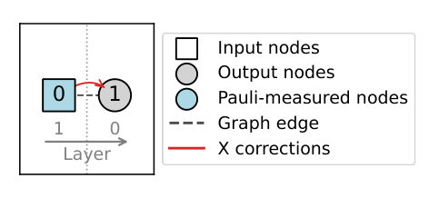
<figcaption class="paper-figure-caption"><b>Fig 1.</b> Figure 1: Measurement-based quantum computation implementing a Hadamard gate. A red arrow from node i to node j indicates a correction Xsi j . The partition of the nodes layers represents the partial order induced by the correction strategy. Nodes are measured from left to right (in this basic example only node 0 is measured, and node 1 is an output node).</figcaption>
</figure>
<figure class="paper-figure-card">
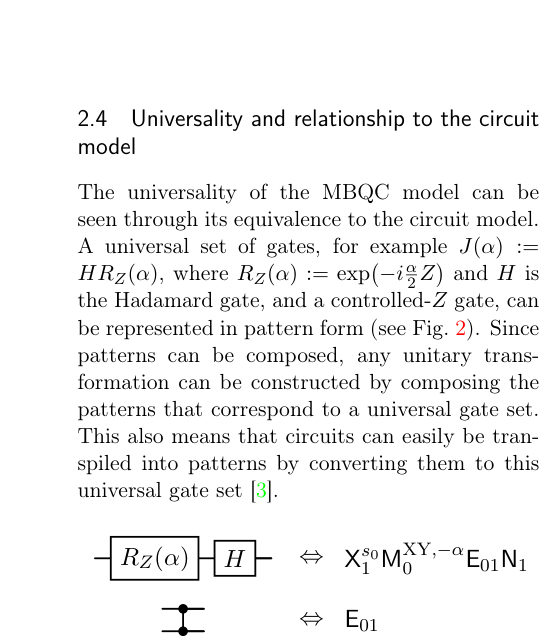
<figcaption class="paper-figure-caption"><b>Fig 2.</b> Figure 2: Equivalence between a universal gate set and MBQC patterns. In the first pattern we have I = {0}, O = {1}, and in the second I = O = {0, 1}.</figcaption>
</figure>
<figure class="paper-figure-card">
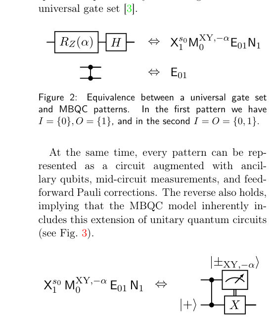
<figcaption class="paper-figure-caption"><b>Fig 3.</b> Figure 3: MBQC patterns in the circuit model with an- cillas, mid-circuit measurements and feed-forward. This pattern implements an H gate if α = 0.</figcaption>
</figure>
<figure class="paper-figure-card">
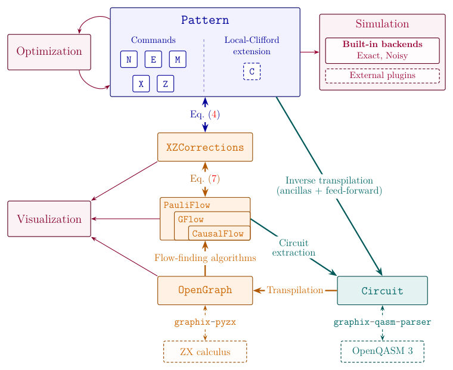
<figcaption class="paper-figure-caption"><b>Fig 4.</b> Figure 4: Illustration of Graphix’ software architecture. Core MBQC objects are centered in blue and yellow, interfaces in red, circuits in green, and external packages with dashed borders.</figcaption>
</figure>
<figure class="paper-figure-card">
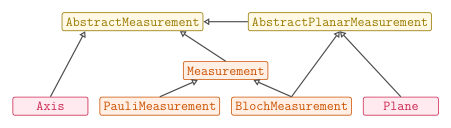
<figcaption class="paper-figure-caption"><b>Fig 5.</b> Figure 5: A class diagram of measurements in Graphix. An arrow from B to A indicates that B is a subtype of A. MBQC objects O (e.g., OpenGraph, PauliFlow) are covariant in the measurement labels, meaning that O[B] is also a subtype of O[A]. Orange and red boxes correspond to classes representing mea- surement configurations with and without information about the angle, respectively. Yellow boxes corre- spond to abstract classes which cannot be directly in- stantiated. AbstractPlanarMeasurement narrows the type AbstractMeasurement allowing to distin- guish between planar (Plane, BlochMeasurement) and Pauli (Axis, PauliMeasurement) measurement configurations.</figcaption>
</figure>
</div>

<p><strong>Summary.</strong> This paper introduces Graphix, a novel Python software framework designed to standardize and simplify the development of Measurement-Based Quantum Computation (MBQC) protocols. It provides a unified environment that handles the complex interplay between graph states, single-qubit measurements, and Pauli corrections. Graphix aims to accelerate research by offering a comprehensive, extensible infrastructure for the entire MBQC workflow.</p>
<p><strong>Why it may be interesting.</strong> While focused on computation, the rigorous mathematical treatment of flow reconstruction (Causal, Generalised, Pauli) and the standardization of patterns provides deep insights into the underlying algebraic structure of quantum operations, which is relevant to understanding constraints in complex quantum systems.</p>
<details>
<summary>Detailed structure</summary>
<p><strong>Main problem.</strong> The field lacks dedicated, unified software tools to bridge the theoretical foundations of Measurement-Based Quantum Computation (MBQC) with practical, extensible research workflows.</p>
<p><strong>Main result.</strong> The authors introduce Graphix, a comprehensive Python framework that provides a unified, modular environment for developing, simulating, and analyzing MBQC protocols.</p>
<p><strong>Method.</strong> The framework is built around the measurement calculus, allowing for the native representation of arbitrary MBQC computations, including state preparation, entanglement, measurements, and Pauli corrections.</p>
<p><strong>Model / system.</strong> The model is Measurement-Based Quantum Computation (MBQC), which utilizes a graph state as a resource and performs computation via single-qubit measurements followed by classical feed-forward Pauli corrections.</p>
<p><strong>Key observables.</strong> The induced partial order ($\prec$) on measured nodes, and the resulting Pauli corrections ($X_s, Z_s$) applied to the resource state.</p>
<p><strong>Important parameters / regimes.</strong> The structure of the open graph $\Gamma$, the measurement angles ($\lambda, \alpha$), and the specific Pauli correction strategies ($x, z$).</p>
<p><strong>Assumptions / limitations.</strong> The core assumption for computation is that the transitive closure of the correction set must define a strict partial order; standardization procedures assume the input pattern is well-formed.</p>
<p><strong>Figures summary.</strong> Figure 1 illustrates an MBQC computation (Hadamard gate) showing the open graph, measurement maps, and resulting Pauli corrections (red arrows).</p>
<p><strong>Paper structure.</strong> The paper reviews essential MBQC concepts (Section 2) using Graphix examples, followed by a detailed description of the library architecture and advanced formalisms like flow reconstruction (Sections 3 and beyond).</p>
</details>
<details>
<summary>Abstract</summary>
<p>Measurement-based quantum computing (MBQC) is a powerful model for quantum computation, but dedicated software tools that bridge its theoretical foundations with practical research workflows remain limited. We present Graphix, a software framework for MBQC written in Python that provides a unified environment for developing, integrating, and exploring measurement-based protocols and algorithms. Graphix establishes a modular, extensible, and user-friendly architecture for the compilation and simulation of quantum computations in the MBQC model with abstractions closely aligned with the theoretical formulations of MBQC. Through examples drawn from recent research on MBQC, we demonstrate Graphix's ability to reproduce and extend previous results. Graphix thus provides a software infrastructure for MBQC, supporting education and research while enabling collaborative development and accelerating the transition toward practical implementations.</p>
</details>
<p><sub><a href="#top">↑ back to top</a></sub></p>

<p><a id="paper-2608.24434"></a></p>
<h3 id="nearly-optimal-amplitude-estimation-at-any-depth"><a href="http://arxiv.org/abs/2608.24434v1">Nearly Optimal Amplitude Estimation at any Depth</a></h3>
<p><strong>Authors:</strong> Jona Erle, Bálint Koczor<br>
<strong>Type:</strong> theory · <strong>Category:</strong> quantum information and computing · <strong>PDF:</strong> <a href="https://arxiv.org/pdf/2608.24434v1">https://arxiv.org/pdf/2608.24434v1</a><br>
<strong>Analysis basis:</strong> full PDF text, analyzed in chunks
<strong>Topic relevance:</strong> <code>quantum measurements</code> <strong>3/5</strong></p>
<div class="figure-strip-hint">↔ Scroll figures horizontally</div>
<div class="paper-figures-scroll">
<figure class="paper-figure-card">
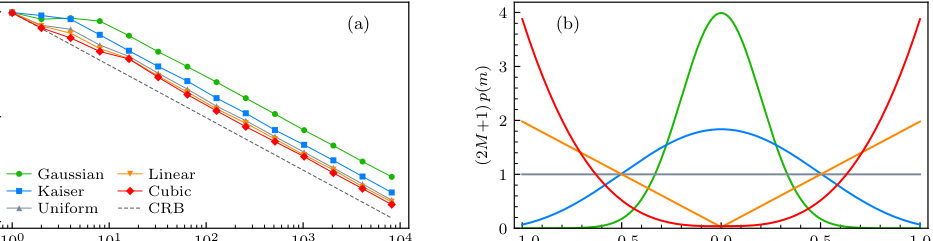
<figcaption class="paper-figure-caption"><b>Fig 1.</b> FIG. 1. WLSAE for five window functions at fixed query budget Q = 106 and fixed λ = 0.5, over 104 independent runs with grid size K = ⌈100 p</figcaption>
</figure>
<figure class="paper-figure-card">
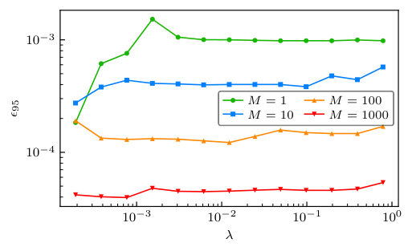
<figcaption class="paper-figure-caption"><b>Fig 2.</b> FIG. 2. Amplitude-uniformity of WLSAE applied to uniform window at fixed query budget Q = 106, over 104 independent runs with grid size K = ⌈100 p</figcaption>
</figure>
<figure class="paper-figure-card">

<figcaption class="paper-figure-caption"><b>Fig 3.</b> Figure 2 sweeps λ over three orders of magnitude at fixed query budget Q = 106 using the uniform window. The curves do not degrade at the boundary and there- fore confirm the amplitude-uniformity promised by Theo- rem 1—each simply shifts down by M −1/2 as the depth increases. The dips of the M = 1 and M = 10 curves at small λ arise because the estimate is squeezed against the boundary of the search interval. Since ˆθ ≥0 while λ is close to 0 the error can no longer fluctuate symmetrically around λ, and the 95th percentile shrinks accordingly. In the extreme λ ≲1/(M √</figcaption>
</figure>
</div>

<p><strong>Summary.</strong> This paper introduces Windowed Least Squares Amplitude Estimation (WLSAE), a quantum algorithm designed to estimate an unknown amplitude with high precision. It achieves a near-optimal query-depth scaling that is remarkably uniform across all possible input amplitudes. This robustness makes it a strong candidate for practical quantum applications like overlap certification in the early fault-tolerant regime.</p>
<p><strong>Why it may be interesting.</strong> This work provides a significant algorithmic improvement for fundamental quantum estimation tasks, directly impacting the feasibility of quantum simulation and verification protocols that rely on accurate amplitude measurements.</p>
<details>
<summary>Detailed structure</summary>
<p><strong>Main problem.</strong> The paper addresses the challenge of achieving near-optimal query-depth tradeoffs in Amplitude Estimation (AE) algorithms, particularly ensuring the quantum speedup persists uniformly across the entire range of possible amplitudes.</p>
<p><strong>Main result.</strong> A novel algorithm, WLSAE, achieves the nearly optimal query-depth tradeoff $M^2N \in \widetilde{O}(\epsilon^{-2})$ uniformly for all amplitudes $a \in [0, 1]$, overcoming limitations of prior methods at the boundaries.</p>
<p><strong>Method.</strong> The method develops Windowed Least Squares Amplitude Estimation (WLSAE) by sampling Grover circuit depths from a carefully constructed, admissible probability window $p$. The error is bounded using concentration inequalities like Bernstein's inequality.</p>
<p><strong>Model / system.</strong> The core task is estimating the amplitude $a = \langle\psi| P |\psi
angle$ (or the angle $\lambda = \arcsin(\sqrt{a})$) associated with a unitary evolution $U$ and a projector $P$. The measurement relies on outcomes from circuits involving the Grover operator $G$.</p>
<p><strong>Key observables.</strong> The primary observable is the estimated amplitude $\hat{a}$ or angle $\hat{	heta}$, with the goal of bounding the additive error $|\hat{	heta} - \lambda| \le \epsilon$.</p>
<p><strong>Important parameters / regimes.</strong> The key parameters are the target error $\epsilon$, the maximum circuit depth $M$, and the number of shots $N$. The performance is analyzed across the full range of amplitudes $a \in [0, 1]$.</p>
<p><strong>Assumptions / limitations.</strong> The analysis assumes the existence of an admissible probability window $p$ and relies on bounding the deviation of a loss function derived from quantum measurements using concentration inequalities.</p>
<p><strong>Figures summary.</strong> Figure 1 compares various window functions (Gaussian, Uniform, etc.) for WLSAE, showing performance relative to the Cramér–Rao bound. Figure 2 confirms the algorithm's amplitude-uniformity by showing constant error bounds across $\lambda \in [0, \pi/2]$ for a fixed query budget.</p>
<p><strong>Paper structure.</strong> The paper first defines the problem and the WLSAE framework. It then derives rigorous bounds on the estimation error by analyzing the variance of the loss function across the depth window. Finally, it applies these bounds to establish the near-optimal query-depth scaling and demonstrates the method's practical applicability.</p>
</details>
<details>
<summary>Abstract</summary>
<p>We develop a class of amplitude estimation algorithms with tunable circuit depth $M$ and circuit repetitions $N$, requiring neither ancilla qubits nor controlled Grover operations. For additive error $ε$ in the Grover angle, they attain the nearly optimal query-depth tradeoff $M^2N\in\widetilde{O}(ε^{-2})$ uniformly over $λ\in[0,π/2]$, spanning the full range from classical sampling at $M=1$ to the Heisenberg limit at $M=Θ(ε^{-1})$. While prior depth-tunable work establishes comparable angle-accuracy guarantees only away from the boundaries $λ\to0$ or $π/2$ or at discrete depth tradeoffs, our guarantee extends to both boundaries, so the quantum speedup persists there rather than degrading to classical sampling. Numerical experiments confirm the predicted uniform angle accuracy and show low overhead in practice, making them strong candidates for practical amplitude estimation in the early fault-tolerant regime, with applications such as overlap certification, trial-state verification, and Monte Carlo methods.</p>
</details>
<p><sub><a href="#top">↑ back to top</a></sub></p>

<p><a id="paper-2608.23944"></a></p>
<h3 id="bulk-phase-transition-and-edge-behavior-in-temporally-correlated-random-matrices"><a href="http://arxiv.org/abs/2608.23944v1">Bulk Phase Transition and Edge Behavior in Temporally Correlated Random Matrices</a></h3>
<p><strong>Authors:</strong> Masato Hisakado, Takuya Kaneko<br>
<strong>Type:</strong> theory · <strong>Category:</strong> statistical mechanics · <strong>PDF:</strong> <a href="https://arxiv.org/pdf/2608.23944v1">https://arxiv.org/pdf/2608.23944v1</a><br>
<strong>Analysis basis:</strong> full PDF text, analyzed in chunks
<strong>Topic relevance:</strong> <code>Keldysh / 2PI / non-Gaussian methods</code> <strong>2/5</strong> · <code>analog quantum simulation</code> <strong>2/5</strong> · <code>driven-dissipative phase transition</code> <strong>2/5</strong> · <code>methods for driven-dissipative</code> <strong>2/5</strong> · <code>non-equilibrium universality</code> <strong>2/5</strong></p>
<div class="figure-strip-hint">↔ Scroll figures horizontally</div>
<div class="paper-figures-scroll">
<figure class="paper-figure-card">
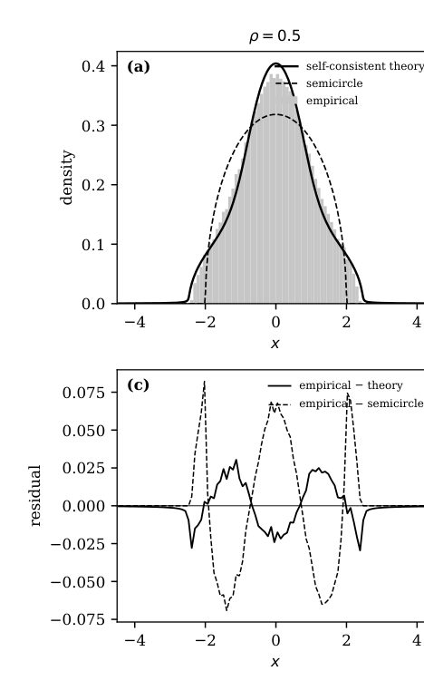
<figcaption class="paper-figure-caption"><b>Fig 1.</b> FIG. 1: (a,b) Bulk spectral density of S at ρ = 0.5 and ρ = 0.8: empirical histogram</figcaption>
</figure>
<figure class="paper-figure-card">
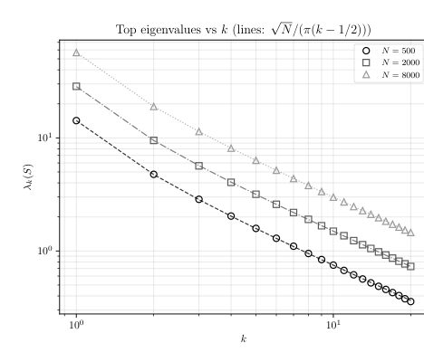
<figcaption class="paper-figure-caption"><b>Fig 2.</b> FIG. 2: Top eigenvalues λk(S) of the noiseless Volterra ensemble S = M/ √</figcaption>
</figure>
<figure class="paper-figure-card">
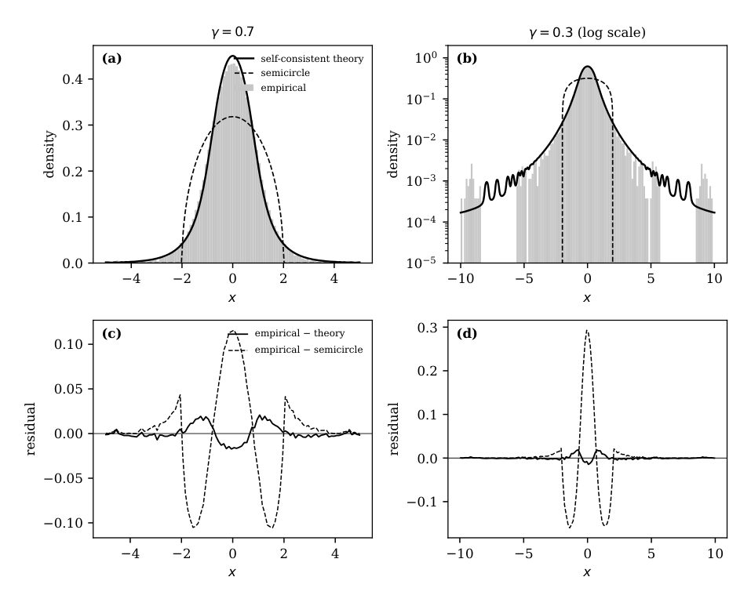
<figcaption class="paper-figure-caption"><b>Fig 3.</b> FIG. 3: (a,b) Bulk spectral density of the power-law ensemble (Definition 2) at γ = 0.7</figcaption>
</figure>
<figure class="paper-figure-card">
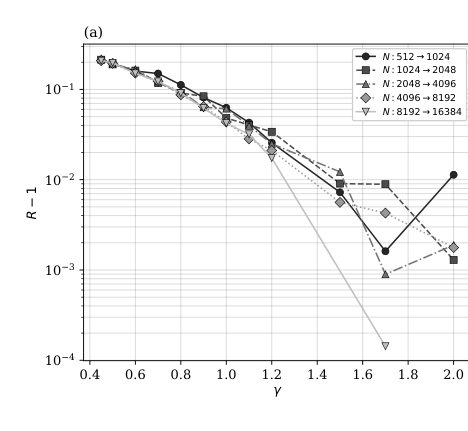
<figcaption class="paper-figure-caption"><b>Fig 4.</b> FIG. 4: Binder-ratio diagnostic R(N, γ) −1, with R(N, γ) = λmax(2N, γ)/λmax(N, γ),</figcaption>
</figure>
</div>

<p><strong>Summary.</strong> This work analyzes how the spectral properties of random matrices change when the underlying correlations decay slowly (power-law). Using the Matrix-Dyson-Equation framework, the authors derive exact results for the bulk density deformation and pinpoint critical exponents that govern the transition between different spectral regimes.</p>
<p><strong>Why it may be interesting.</strong> While the focus is on random matrices, the mathematical techniques used to analyze spectral transitions and critical exponents are highly relevant to understanding phase transitions in complex quantum many-body systems, such as those modeled by disordered Hamiltonians or interacting quantum gases.</p>
<details>
<summary>Detailed structure</summary>
<p><strong>Main problem.</strong> The study investigates the spectral behavior (bulk and edge) of Wigner-type random matrices whose underlying covariance structure exhibits long-range temporal correlations.</p>
<p><strong>Main result.</strong> The bulk spectral density deforms from the semicircle law in a predictable manner, and the analysis establishes critical exponents ($\gamma_c=1/2$) governing the divergence of bulk moments for power-law correlations.</p>
<p><strong>Method.</strong> The authors employ advanced techniques involving the Matrix-Dyson-Equation (MDE) framework, moment calculations, and the derivation of a scalar self-consistent equation for the Stieltjes transform.</p>
<p><strong>Model / system.</strong> The model consists of symmetric $N 	imes N$ Wigner-type random matrices constructed from row-independent stationary Gaussian sequences, allowing for controlled correlation decay via AR(1) or power-law structures.</p>
<p><strong>Key observables.</strong> Bulk spectral density $\varrho(x)$, the largest eigenvalue $\lambda_{\max}(S)$, and the fourth moment $\mu_4(
ho)$.</p>
<p><strong>Important parameters / regimes.</strong> The correlation decay parameter $
ho$ (for AR(1)) and the power-law exponent $\gamma$ (for $d	au \sim t^{-\gamma}$), with critical points at $\gamma_c=1/2$ and $\gamma=1$.</p>
<p><strong>Assumptions / limitations.</strong> The analysis relies on verifying hypotheses (A)-(E) of the MDE framework, though limitations exist for strong correlations ($
ho \gtrsim 0.7$).</p>
<p><strong>Figures summary.</strong> Figures compare empirical spectral histograms against theoretical predictions (e.g., for $
ho=0.5, 0.8$) and show the collapse of top eigenvalues onto a singular-value cascade for the noiseless Volterra ensemble.</p>
<p><strong>Paper structure.</strong> The paper progresses by first analyzing the AR(1) case, verifying MDE hypotheses and deriving the self-consistent equation. It then extends the analysis to power-law correlations, rigorously determining critical exponents ($\gamma_c$) and resolving the apparent conflict between smooth crossovers and discrete phase transitions.</p>
</details>
<details>
<summary>Abstract</summary>
<p>We study long-range correlated Wigner-type matrices built from row-independent stationary Gaussian sequences. For exponentially decaying (AR(1)) correlations, the bulk spectral density deforms from the semicircle law via an explicit combinatorial "hub" mechanism, yet we verify the flatness and decay hypotheses of the matrix-Dyson-equation framework (MDE), with numerical evidence supporting Tracy-Widom edge universality for every fixed $ρ<1$ of the exponential decay correlations; the degenerate limit $ρ\to1^-$ reduces to a symmetrized Volterra operator, connecting to the singular-value cascade identified in a companion BBP analysis. For power-law correlations $dt\sim t^{-γ}$, we identify $γ_c=1/2$ as the critical point for divergence of the bulk fourth-moment, while $γ=1$ marks the breakdown of the flatness condition governing the MDE edge analysis. We prove the fourth-moment transition exactly and find numerically that the self-consistent edge varies smoothly across $γ=1$, with no evidence of a kink or discontinuity.</p>
</details>
<p><sub><a href="#top">↑ back to top</a></sub></p>

<p><a id="paper-2608.23764"></a></p>
<h3 id="entropy-production-bounds-the-accuracy-of-computation-in-markov-networks"><a href="http://arxiv.org/abs/2608.23764v1">Entropy Production Bounds the Accuracy of Computation in Markov Networks</a></h3>
<p><strong>Authors:</strong> Songela W. Chen, David T. Limmer<br>
<strong>Type:</strong> theory · <strong>Category:</strong> statistical mechanics · <strong>PDF:</strong> <a href="https://arxiv.org/pdf/2608.23764v1">https://arxiv.org/pdf/2608.23764v1</a><br>
<strong>Analysis basis:</strong> full PDF text, analyzed in chunks
<strong>Topic relevance:</strong> <code>correlated / nonlocal dissipation</code> <strong>2/5</strong> · <code>driven-dissipative phase transition</code> <strong>2/5</strong> · <code>non-equilibrium universality</code> <strong>2/5</strong> · <code>Keldysh / 2PI / non-Gaussian methods</code> <strong>1/5</strong> · <code>methods for driven-dissipative</code> <strong>1/5</strong> · <code>quantum measurements</code> <strong>1/5</strong></p>
<div class="figure-strip-hint">↔ Scroll figures horizontally</div>
<div class="paper-figures-scroll">
<figure class="paper-figure-card">
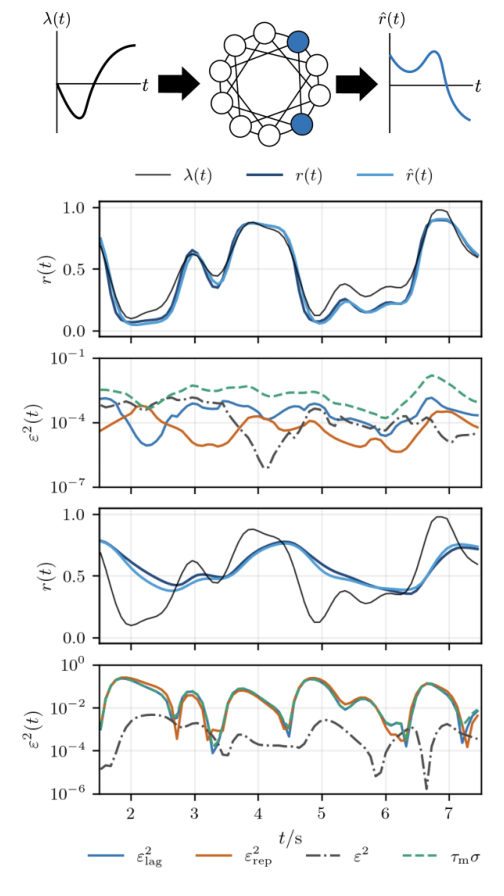
<figcaption class="paper-figure-caption"><b>Fig 1.</b> FIG. 1. Error decomposition for trained reversible Markov networks with N = 10 states. The upper pair of panels shows a memoryless target. The lower pair shows a history- dependent target. In each trajectory panel, black denotes the input, dark blue the target output, and light blue the trained network output. The error panels decompose the squared tracking error into lag error ε2 lag, representation error ε2 rep, to- tal error ε2, and the thermodynamic bound τmσ.</figcaption>
</figure>
<figure class="paper-figure-card">
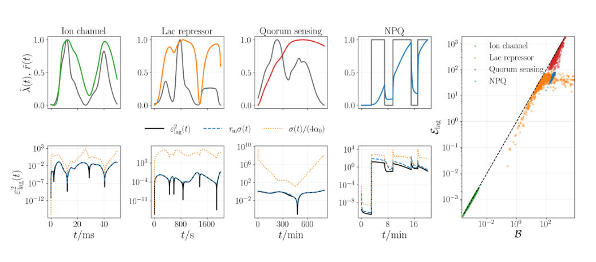
<figcaption class="paper-figure-caption"><b>Fig 2.</b> FIG. 2. Thermodynamic lag-error bounds in four biochemical information-processing models. The first four columns show representative driven trajectories for the lac repressor, ligand-gated channel, quorum-sensing, and nonphotochemical quenching (NPQ) models. In the top row, black curves are normalized inputs ˜λ(t) ∝λ(t) and colored curves are normalized outputs ˜r(t) ∝ˆr(t). In the bottom row, black curves show the instantaneous squared lag error, blue dashed curves show the bound τmσ with quadratic entropy production, and orange dotted curves show the Sobolev bound σ/4α0 with the full entropy production. The rightmost panel compares the integrated lag error with the integrated bound across...</figcaption>
</figure>
</div>

<p><strong>Summary.</strong> This work derives a fundamental thermodynamic bound showing that the computational error in stochastic networks is limited by the entropy production rate and the system's memory capacity. By applying this to models of biochemical processes, the authors establish a quantitative framework for understanding the energetic costs associated with biological computation. It demonstrates that high accuracy requires either significant energy dissipation or the retention of long-lived memory states.</p>
<p><strong>Why it may be interesting.</strong> The connection between non-equilibrium thermodynamics (entropy production) and information processing capacity provides a fundamental, quantitative constraint on how efficiently biological systems can compute.</p>
<details>
<summary>Detailed structure</summary>
<p><strong>Main problem.</strong> The paper establishes a universal thermodynamic bound on the accuracy of computation performed by stochastic networks.</p>
<p><strong>Main result.</strong> The lag error in computation is bounded by the product of the entropy production rate and a memory time ($\epsilon^2_{	ext{lag}} \le 	au_m \sigma$).</p>
<p><strong>Method.</strong> The analysis decomposes the total error into representation and lag components, deriving the bound using entropy production rates and relative entropy decay.</p>
<p><strong>Model / system.</strong> The study uses reversible continuous-time Markov networks to model biological information processing, including systems like ion channels, Lac repressors, and NPQ.</p>
<p><strong>Key observables.</strong> Computational error ($\epsilon^2$), Entropy Production Rate ($\sigma$), and Memory Time ($   au_m$).</p>
<p><strong>Important parameters / regimes.</strong> The bound is derived for the near-equilibrium limit, highlighting the trade-off between dissipation and memory storage.</p>
<p><strong>Assumptions / limitations.</strong> The analysis relies on decomposing the error and using quadratic approximations for entropy production in some models, though the bound itself is shown to be general.</p>
<p><strong>Figures summary.</strong> Figures compare the integrated lag error against the derived thermodynamic bound across various random input protocols for multiple biochemical models.</p>
<p><strong>Paper structure.</strong> The paper introduces the error decomposition, derives the core thermodynamic bound ($\epsilon^2_{	ext{lag}} \le 	au_m \sigma$), and then applies this framework to test it across several distinct, complex biological Markov models.</p>
</details>
<details>
<summary>Abstract</summary>
<p>Biological and artificial networks compute by transforming time-dependent inputs into functional outputs. Because the internal state of a stochastic network relaxes on finite timescales, its output generally lags behind a changing environment, producing computational errors. We show that for reversible continuous-time Markov networks the error admits a universal thermodynamic bound. Decomposing the total error into representation and lag contributions, we derive an inequality relating the lag error to the entropy production rate and a memory time equal to the integrated equilibrium autocorrelation of the output observable. The bound implies that accurate dynamical computation requires either substantial dissipation or long-lived memory encoded in slowly relaxing modes. We demonstrate these principles in artificial Markov networks and in models of biochemical information processing. Our results establish a thermodynamic limit on information processing in stochastic networks and provide a quantitative framework for understanding the energetic costs of biological computation.</p>
</details>
<p><sub><a href="#top">↑ back to top</a></sub></p>

<p><a id="paper-2608.23916"></a></p>
<h3 id="the-loss-floor-of-denoising-score-matching-fisher-geometry-from-schrodinger-bridges"><a href="http://arxiv.org/abs/2608.23916v1">The Loss Floor of Denoising Score Matching: Fisher Geometry from Schrödinger Bridges</a></h3>
<p><strong>Authors:</strong> Avinash Raju, Kai Zhang<br>
<strong>Type:</strong> theory · <strong>Category:</strong> statistical mechanics · <strong>PDF:</strong> <a href="https://arxiv.org/pdf/2608.23916v1">https://arxiv.org/pdf/2608.23916v1</a><br>
<strong>Analysis basis:</strong> full PDF text, analyzed in chunks
<strong>Topic relevance:</strong> <code>Keldysh / 2PI / non-Gaussian methods</code> <strong>2/5</strong> · <code>analog quantum simulation</code> <strong>1/5</strong> · <code>driven-dissipative phase transition</code> <strong>1/5</strong> · <code>methods for driven-dissipative</code> <strong>1/5</strong> · <code>non-equilibrium universality</code> <strong>1/5</strong> · <code>quantum measurements</code> <strong>1/5</strong></p>
<div class="figure-strip-hint">↔ Scroll figures horizontally</div>
<div class="paper-figures-scroll">
<figure class="paper-figure-card">
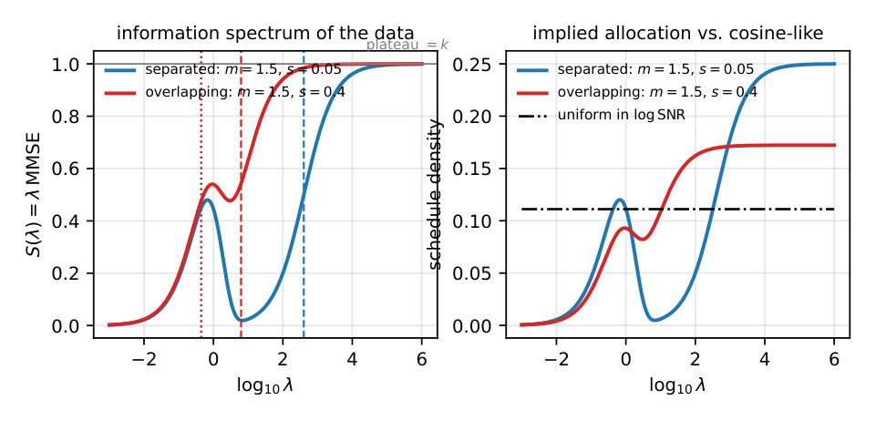
<figcaption class="paper-figure-caption"><b>Fig 1.</b> Figure 1: Data/schedule separation of the loss floor. Left: the information spectrum S(λ) = λ MMSE(λ) for two mixtures. Dotted lines mark the mode-separation scale λ = m−2, dashed lines the within-mode scale λ = s−2; the plateau at large λ is the intrinsic dimension k = 1. Right: the schedule density implied by Eq. (4.8), compared with a uniform-in-logSNR allocation. Uniform allocation is correct only for featureless data.</figcaption>
</figure>
<figure class="paper-figure-card">
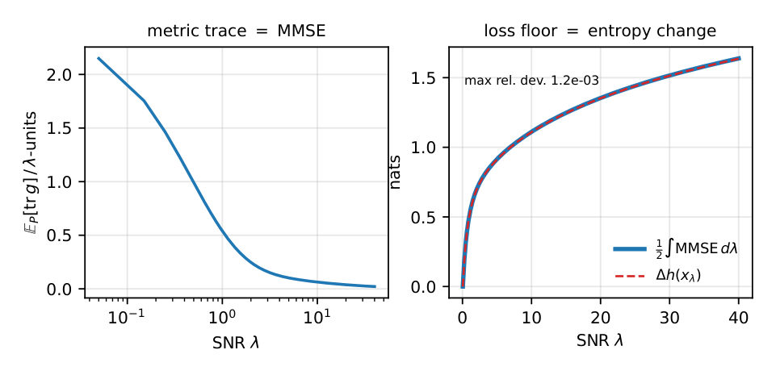
<figcaption class="paper-figure-caption"><b>Fig 2.</b> Figure 2: The loss floor is an entropy. Left: the trace of the latent Fisher–Rao metric, equivalently the MMSE of endpoint estimation, along the flow. Right: the accumulated floor 1</figcaption>
</figure>
<figure class="paper-figure-card">
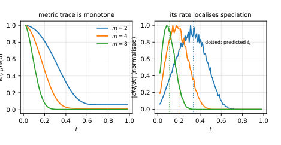
<figcaption class="paper-figure-caption"><b>Fig 3.</b> Figure 4: The metric trace is monotone (left), while its rate localizes the symmetry-breaking transition (right), with dotted lines marking the predicted bimodality threshold.</figcaption>
</figure>
<figure class="paper-figure-card">
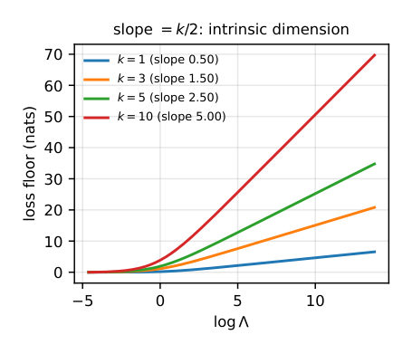
<figcaption class="paper-figure-caption"><b>Fig 4.</b> Figure 3: The floor diverges logarithmically at the data end, with slope k/2 for Gaussian data of rank k in R10.</figcaption>
</figure>
<figure class="paper-figure-card">
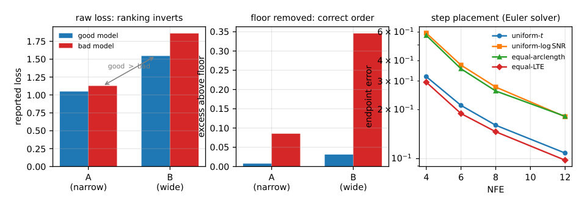
<figcaption class="paper-figure-caption"><b>Fig 5.</b> Figure 5: Consequences of the decomposition. Left: raw training loss for two models of known quality on two SNR ranges; the ranking inverts. Centre: after subtracting the floor, the excess orders the models correctly on both ranges. Right: step placement for a first-order solver on the analytic mixture, mean endpoint error against the exactly integrated probability-flow ODE.</figcaption>
</figure>
</div>

<p><strong>Summary.</strong> This theoretical paper analyzes the training loss of diffusion models, showing that the irreducible excess loss is mathematically equivalent to the integrated Fisher-Rao metric along the diffusion path. By deriving this from the Schrödinger bridge principle, it provides a deep geometric understanding of how the training objective captures the intrinsic information geometry of the data manifold.</p>
<p><strong>Why it may be interesting.</strong> While focused on ML, the rigorous connection between information geometry (Fisher metric) and the fundamental path-space structure of stochastic processes is highly relevant to understanding the geometry of quantum state estimation and open quantum system dynamics.</p>
<details>
<summary>Detailed structure</summary>
<p><strong>Main problem.</strong> The paper quantifies the 'irreducible excess' in the training loss of Denoising Score Matching (DSM) by relating it to the intrinsic geometry of the diffusion process.</p>
<p><strong>Main result.</strong> This excess loss is exactly equal to the integrated trace of the Fisher–Rao metric of the conditional endpoint family, providing a geometric interpretation of the training objective floor.</p>
<p><strong>Method.</strong> The derivation utilizes the Schrödinger bridge variational principle and employs information-theoretic tools, specifically relating the loss to the rate of mutual information loss.</p>
<p><strong>Model / system.</strong> The model is a general diffusion process used in diffusion models, connecting a clean data distribution ($P_0$) to a noisy state ($P_T$) via a corruption kernel.</p>
<p><strong>Key observables.</strong> Loss Floor, Fisher–Rao metric ($g(x, t)$), Mutual Information $I(y; x_t)$, and the excess action $\Delta S$.</p>
<p><strong>Important parameters / regimes.</strong> Diffusion time $T$, noise schedule parameters ($\sigma_t, \alpha_t$), and the Signal-to-Noise Ratio (SNR).</p>
<p><strong>Assumptions / limitations.</strong> Mild regularity assumptions are required for the general corruption kernel, and the analysis contrasts second-order training geometry with third-order sampling errors.</p>
<p><strong>Figures summary.</strong> Figures demonstrate the agreement between the calculated floor ($rac{1}{2} R  ext{MMSE} d\lambda$) and the entropy change ($\Delta h$) for Gaussian mixtures, and confirm the scaling of the floor divergence rate with the data rank $k$.</p>
<p><strong>Paper structure.</strong> The paper builds from the general variational principle (Schrödinger bridge) to derive the geometric characterization of the loss floor via the Fisher metric, and then applies this to specific Gaussian cases to derive closed forms and test identities.</p>
</details>
<details>
<summary>Abstract</summary>
<p>Denoising score matching trains diffusion models by regressing onto a conditional score, although generation ultimately requires the marginal score. The two objectives share the same population minimizer, but the conditional target remains random at fixed noisy state and introduces an irreducible excess in the training loss. We isolate this excess and show that, for a general corruption kernel under mild regularity assumptions, it is exactly the trace of the Fisher--Rao metric of the conditional endpoint family, integrated along the diffusion trajectory. This gives an exact conditional-variance decomposition of the denoising objective and identifies the information geometry observed in diffusion latent spaces as an intrinsic component of the training loss. We derive the result from a Schr"odinger bridge variational principle, in which the ideal objective arises as excess path-space relative entropy. For corruption diffusions, the Fisher term is proportional to the rate at which the noisy state loses mutual information about the clean data, separating the loss floor into an information flow determined by the data and a weight determined by the corruption schedule and objective. In the Gaussian case, this yields a closed form for the floor, recovers reparametrization invariance of the continuous-time objective, and relates its high-SNR divergence to the information dimension of the data. Finally, we show that raw losses obtained with different noise ranges or weightings need not rank models consistently because they contain different additive floors, and contrast the second-order geometry seen by training with the third-order conditional statistics entering numerical sampling error.</p>
</details>
<p><sub><a href="#top">↑ back to top</a></sub></p>

<p><a id="paper-2608.23905"></a></p>
<h3 id="jamming-states-in-random-sequential-adsorption-of-diffusion-limited-aggregates"><a href="http://arxiv.org/abs/2608.23905v1">Jamming states in random sequential adsorption of diffusion-limited aggregates</a></h3>
<p><strong>Authors:</strong> Fahad Puthalath, Dipanjan Mandal, Sumanta Kundu<br>
<strong>Type:</strong> theory · <strong>Category:</strong> statistical mechanics · <strong>PDF:</strong> <a href="https://arxiv.org/pdf/2608.23905v1">https://arxiv.org/pdf/2608.23905v1</a><br>
<strong>Analysis basis:</strong> full PDF text, analyzed in chunks
<strong>Topic relevance:</strong> <code>methods for driven-dissipative</code> <strong>2/5</strong> · <code>non-equilibrium universality</code> <strong>2/5</strong> · <code>analog quantum simulation</code> <strong>1/5</strong> · <code>driven-dissipative phase transition</code> <strong>1/5</strong></p>
<div class="figure-strip-hint">↔ Scroll figures horizontally</div>
<div class="paper-figures-scroll">
<figure class="paper-figure-card">
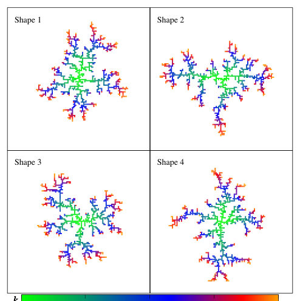
<figcaption class="paper-figure-caption"><b>Fig 1.</b> FIG. 1. Typical DLA clusters on a square lattice at different stages of its growth process up to size k = 1024. Four different panels represent independently generated DLA clusters.</figcaption>
</figure>
<figure class="paper-figure-card">
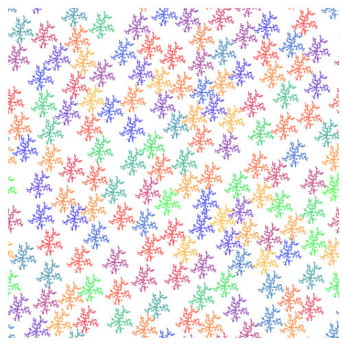
<figcaption class="paper-figure-caption"><b>Fig 2.</b> FIG. 2. Typical jamming configuration for DLA clusters of size k = 1024 in the monodisperse fixed-shape model using shape-1 on a square lattice of size L = 1024 with periodic boundary conditions.</figcaption>
</figure>
<figure class="paper-figure-card">
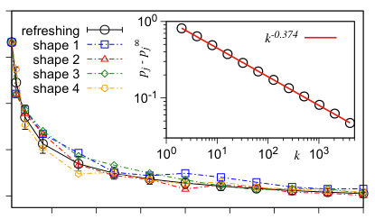
<figcaption class="paper-figure-caption"><b>Fig 3.</b> FIG. 3. Jamming density pj as a function of DLA cluster size k for the four cluster shapes displayed in Fig. 1 in the monodis- perse fixed-shape variant and for the monodisperse refreshing- shape variant. Data are based on lattice size L = 2048 and averaged over 105 configurations for k ⩾32 and at least 104</figcaption>
</figure>
<figure class="paper-figure-card">
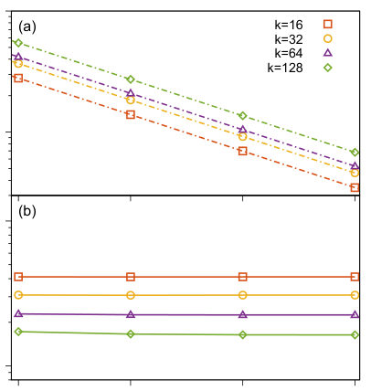
<figcaption class="paper-figure-caption"><b>Fig 4.</b> FIG. 4. Scaling behavior of the fluctuation of jamming den- sity. (a) Log-log plot of the standard deviation σ(L) against system size L for the monodisperse fixed-shape variant. The dotted line shows a power-law fit L−1.0001(5). (b) Correspond- ing results ˜σ(L) for the refreshing-shape variant, showing no apparent dependence on L. Results are obtained by averaging over 105 realizations.</figcaption>
</figure>
<figure class="paper-figure-card">
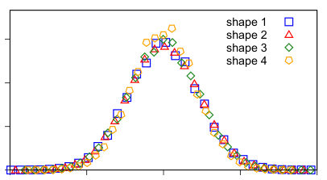
<figcaption class="paper-figure-caption"><b>Fig 5.</b> FIG. 6. For fixed-shape and k = 32, the probability density distribution Pi(pj) data as in Fig. 5(a) shows excellent col- lapse when plotted as a function of (pj −⟨pj⟩).</figcaption>
</figure>
</div>

<p><strong>Summary.</strong> This paper simulates the random sequential adsorption of DLA clusters on a lattice to study jamming states. It systematically analyzes how varying the diversity of cluster shapes—from fixed to highly polydisperse—affects the final jamming density and its fluctuations. The findings reveal that increased shape diversity leads to denser packing, providing quantitative scaling laws for these non-equilibrium deposition processes.</p>
<p><strong>Why it may be interesting.</strong> While focused on classical statistical mechanics, the study of jamming transitions and the role of quenched disorder (shape diversity) in determining macroscopic properties has analogies in understanding complex energy landscapes or disordered quantum systems.</p>
<details>
<summary>Detailed structure</summary>
<p><strong>Main problem.</strong> The study investigates how the diversity of cluster shapes affects the jamming properties when using Diffusion-Limited Aggregation (DLA) clusters for irreversible adsorption.</p>
<p><strong>Main result.</strong> The jamming density decreases with cluster size as a power-law, and increasing shape polydispersity promotes denser packing. Furthermore, the fluctuation scaling of the jamming density differs significantly depending on whether the cluster shape pool is fixed or refreshed.</p>
<p><strong>Method.</strong> The research employs large-scale Monte Carlo simulations to model the Random Sequential Adsorption (RSA) process using DLA clusters on a square lattice.</p>
<p><strong>Model / system.</strong> The system is the irreversible adsorption of DLA clusters on a square lattice, analyzed through several model variants: fixed-shape, refreshing-shape, and polydisperse variants controlled by a pool size $S$.</p>
<p><strong>Key observables.</strong> Jamming density ($p_j$), the scaling exponent $\alpha$ in $p_j(k) - p_\infty \sim k^{-\alpha}$, and the fluctuation of the jamming density ($\sigma(L)$).</p>
<p><strong>Important parameters / regimes.</strong> Cluster size ($k$), system size ($L$), and the degree of shape diversity (controlled by $S$).</p>
<p><strong>Assumptions / limitations.</strong> The analysis relies on the assumption that differences between model variants diminish at very large cluster sizes ($k 	o \infty$) due to the statistical self-similarity of DLA clusters.</p>
<p><strong>Figures summary.</strong> Figures illustrate representative DLA clusters showing shape diversity and show the scaling behavior of the jamming density and its fluctuations ($\sigma(L)$) for different model variants.</p>
<p><strong>Paper structure.</strong> The paper systematically compares results from multiple model variants (fixed vs. refreshing vs. polydisperse) to quantify the role of shape diversity on the jamming density and its fluctuations, establishing scaling laws for both observables.</p>
</details>
<details>
<summary>Abstract</summary>
<p>Motivated by the ubiquity of ramified fractal deposits in nature and engineered systems, we investigate the irreversible adsorption of diffusion-limited aggregation (DLA) clusters on a square lattice. We study the role of cluster shape diversity on jamming properties of the system by systematically controlling the number of distinct shapes used across and within realizations, encompassing both monodisperse and polydisperse model variants. Our large-scale simulations over a broad range of cluster sizes $2\leqslant k\leqslant4096$ show that the jamming density decreases with cluster size as a power-law $p_j(k)-p_j^\infty\sim k^{-α}$. Both $α$ and $p_j^\infty$ are found to depend on the degree of shape diversity, with $α$ ranging from $0.374(2)$ to $0.417(1)$. It is observed that increasing shape polydispersity promotes denser packing. Importantly, the fluctuations of the jamming density exhibit distinct scaling behavior: $σ(L)\sim1/L$ for a fixed pool of cluster shape(s), but remain $L$-independent when the pool of shape(s) is refreshed across different realizations. Furthermore, our results demonstrate that the differences between the model variants systematically diminish with increasing $k$ and are expected to vanish as $k\to\infty$ due to the statistical self-similarity of the DLA clusters.</p>
</details>
<p><sub><a href="#top">↑ back to top</a></sub></p>

<p><a id="paper-2608.24032"></a></p>
<h3 id="time-dependent-tunneling-in-the-thin-barrier-limit"><a href="http://arxiv.org/abs/2608.24032v1">Time-Dependent Tunneling in the Thin-Barrier Limit</a></h3>
<p><strong>Authors:</strong> Tanmay Vachaspati, Frank Wilczek, Zara Yu<br>
<strong>Type:</strong> theory · <strong>Category:</strong> other · <strong>PDF:</strong> <a href="https://arxiv.org/pdf/2608.24032v1">https://arxiv.org/pdf/2608.24032v1</a><br>
<strong>Analysis basis:</strong> full PDF text, analyzed in chunks
<strong>Topic relevance:</strong> <code>Keldysh / 2PI / non-Gaussian methods</code> <strong>2/5</strong> · <code>methods for driven-dissipative</code> <strong>2/5</strong> · <code>analog quantum simulation</code> <strong>1/5</strong> · <code>quantum measurements</code> <strong>1/5</strong></p>
<div class="figure-strip-hint">↔ Scroll figures horizontally</div>
<div class="paper-figures-scroll">
<figure class="paper-figure-card">
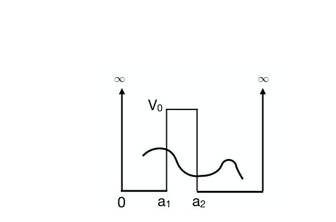
<figcaption class="paper-figure-caption"><b>Fig 1.</b> FIG. 1: A finite barrier of height V0 and width d = a2 −a1 and an illustration of part of a wavefunction.</figcaption>
</figure>
<figure class="paper-figure-card">
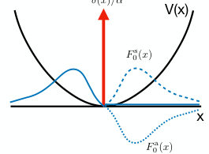
<figcaption class="paper-figure-caption"><b>Fig 2.</b> FIG. 3: Lowest energy wavefunctions for α = 0.</figcaption>
</figure>
<figure class="paper-figure-card">
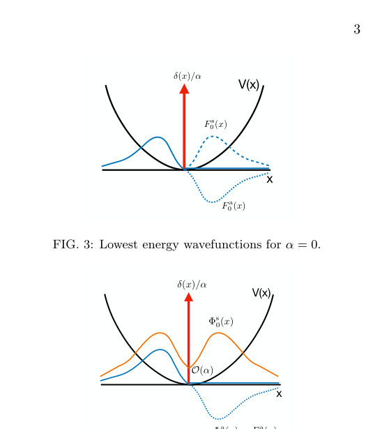
<figcaption class="paper-figure-caption"><b>Fig 3.</b> FIG. 4: Lowest energy wavefunctions for small but non-zero α.</figcaption>
</figure>
<figure class="paper-figure-card">
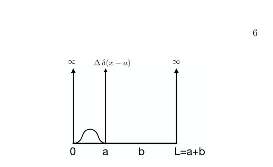
<figcaption class="paper-figure-caption"><b>Fig 4.</b> FIG. 6: Illustration of the asymmetric double square well potential.</figcaption>
</figure>
<figure class="paper-figure-card">
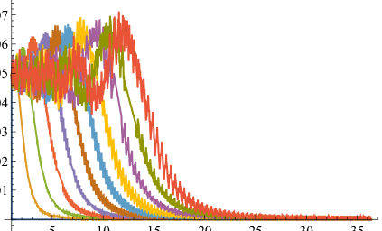
<figcaption class="paper-figure-caption"><b>Fig 5.</b> FIG. 7: Snapshots of |Ψ(j) R |2 calculated from (74) for j = 1 with µ = 1, a = 1, b = 25 √</figcaption>
</figure>
</div>

<p><strong>Summary.</strong> This paper develops a perturbative theory for quantum tunneling in the thin-barrier limit, moving beyond the standard WKB approximation. It derives that the time-dependent tunneling probability depends critically on system symmetry, predicting quadratic growth for resonant cases and linear growth otherwise. This work provides essential theoretical tools for modeling energy leakage and coherent dynamics in engineered quantum barriers.</p>
<p><strong>Why it may be interesting.</strong> The detailed analysis of time-dependent tunneling rates, especially the distinction between $t^2$ and linear growth, provides crucial theoretical benchmarks for understanding coherent energy transfer in engineered quantum systems like optical lattices or mesoscopic structures.</p>
<details>
<summary>Detailed structure</summary>
<p><strong>Main problem.</strong> The paper analyzes quantum tunneling when the tunneling action is small, specifically in the thin-barrier limit, contrasting with standard WKB methods.</p>
<p><strong>Main result.</strong> The tunneling probability exhibits distinct time dependencies depending on the system's symmetry: quadratic growth ($\propto t^2$) in resonant/symmetric cases and linear growth in non-resonant/asymmetric cases.</p>
<p><strong>Method.</strong> The analysis employs a perturbative expansion in the barrier strength ($\alpha$) and utilizes time-dependent Schrödinger equation solutions, often involving Green's functions or eigenbasis expansions.</p>
<p><strong>Model / system.</strong> The system models a quantum particle tunneling through a potential barrier, which is idealized as a delta function barrier ($\alpha^{-1}\delta(x)$) in the thin-barrier limit. The Hamiltonian is solved using time-dependent methods.</p>
<p><strong>Key observables.</strong> Tunneling probability ($P_R(t)$) and the time-dependent tunneling wavefunction $\psi(t, x>a)$.</p>
<p><strong>Important parameters / regimes.</strong> The barrier strength $\alpha$ (control parameter), and the energy mismatch $\Delta E(a)^0 = E_a^0 - E_s^0$ which dictates the early-time rate.</p>
<p><strong>Assumptions / limitations.</strong> The analysis relies on perturbative approximations in $\alpha$ and uses specific limits (e.g., early-time approximations, quadratic order in $\alpha$) to simplify the complex time evolution.</p>
<p><strong>Figures summary.</strong> Figures illustrate the potential barriers (finite vs. delta function) and show the lowest energy wavefunctions for both zero and small non-zero barrier strengths.</p>
<p><strong>Paper structure.</strong> The paper develops the theory by first establishing the thin-barrier limit equivalence, then solving the $\alpha=0$ case, and finally introducing the barrier strength perturbatively to derive the time-dependent tunneling probability in various regimes.</p>
</details>
<details>
<summary>Abstract</summary>
<p>The usual WKB analysis for quantum tunneling applies when the tunneling action is large, as it is for tall, wide potential barriers. In contrast we analyze tunneling when the action is small, as it is for tunneling across a tall, thin barrier. We develop a perturbative analysis where the control parameter is the inverse of the area under the potential barrier and apply our technique to several examples in $1+1$ dimensions. In resonant situations for bound particles we find that the tunneling probability grows with time as $\propto t^2$, while in non-resonant situations it grows linearly with time. We evaluate not only the tunneling probability but also the time-dependent tunneling wavefunction for a particle that escapes to infinity, {\it i.e.} from a quasi-bound state to the continuum.</p>
</details>
<p><sub><a href="#top">↑ back to top</a></sub></p>

<p><a id="paper-2608.24472"></a></p>
<h3 id="disorder-induced-conducting-edges-on-kagome-lattice"><a href="http://arxiv.org/abs/2608.24472v1">Disorder-induced conducting edges on Kagomé lattice</a></h3>
<p><strong>Authors:</strong> A. Chmeruk, D. Jones, L. Chioncel<br>
<strong>Type:</strong> theory · <strong>Category:</strong> disordered systems and neural networks · <strong>PDF:</strong> <a href="https://arxiv.org/pdf/2608.24472v1">https://arxiv.org/pdf/2608.24472v1</a><br>
<strong>Analysis basis:</strong> full PDF text, analyzed in chunks
<strong>Topic relevance:</strong> <code>Keldysh / 2PI / non-Gaussian methods</code> <strong>2/5</strong> · <code>methods for driven-dissipative</code> <strong>2/5</strong> · <code>analog quantum simulation</code> <strong>1/5</strong></p>
<div class="figure-strip-hint">↔ Scroll figures horizontally</div>
<div class="paper-figures-scroll">
<figure class="paper-figure-card">
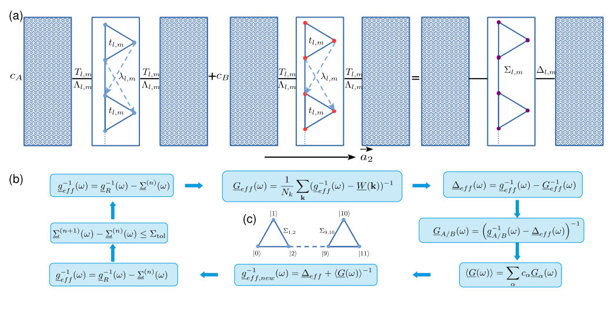
<figcaption class="paper-figure-caption"><b>Fig 1.</b> FIG. 1: (a) Schematic representation of the Kagome-lattice tiling with Nc = 6 (the stripe here contains 6 sites) periodized along a2 direction. The solid lines represent intra-cluster NN hopping parameters ti,j and the NNN λi,j complex SOC couplings are depicted with dashed lines. The black line between the clusters depict inter-cluster couplings (Tij, Λij). (b) Flow diagram of the computational self-consistent embedding scheme Eq. (6) →(c) Enumeration of the basis sites inside the cluster and the corresponding off-diagonal components of the self-energy (12)</figcaption>
</figure>
<figure class="paper-figure-card">
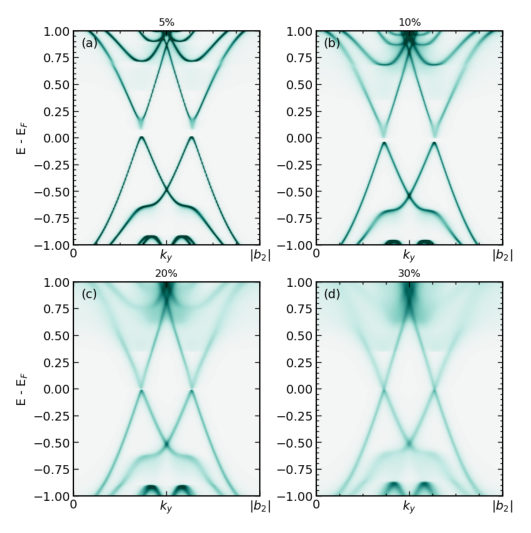
<figcaption class="paper-figure-caption"><b>Fig 2.</b> FIG. 2: The Bloch spectral function with δ = 0.6 with varying concentrations up to 30% of B-type clusters. The gap closes at around 20 % . The smearing is η = 10−4</figcaption>
</figure>
<figure class="paper-figure-card">
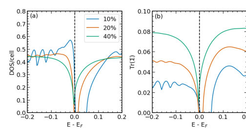
<figcaption class="paper-figure-caption"><b>Fig 3.</b> FIG. 3: The evolution of the total DOS with concentration at δ = 0.5 reveals the gap closure at the concentration of 40%.</figcaption>
</figure>
<figure class="paper-figure-card">
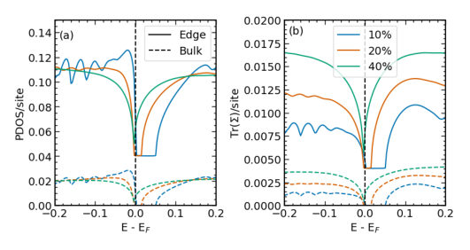
<figcaption class="paper-figure-caption"><b>Fig 4.</b> FIG. 4: The evolution of the PDOS with concentration at δ = 0.5. To highlight the gap a different offsets for edge-PDOS (0.04) and Σ (0.004) are introduced</figcaption>
</figure>
<figure class="paper-figure-card">
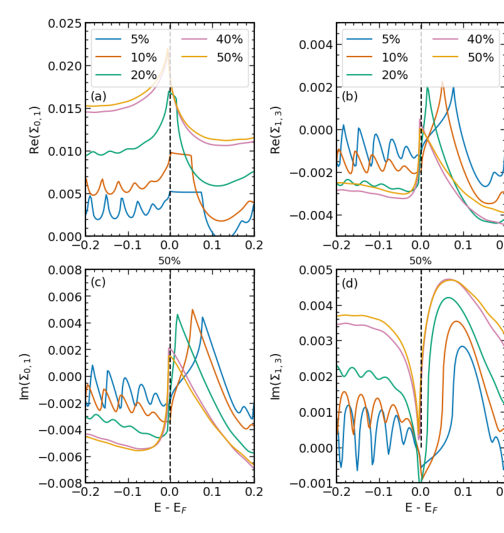
<figcaption class="paper-figure-caption"><b>Fig 5.</b> FIG. 5: Off-diagonal components of the cluster self-energies for δ = 0.5 near the edge.</figcaption>
</figure>
</div>

<p><strong>Summary.</strong> This theoretical work analyzes the effect of quenched disorder on the electronic structure of the Kagomé lattice using the cluster CPA. The key finding is that disorder-induced renormalization of hopping terms can drive the system into a gapless phase featuring conducting edge modes. This suggests that disorder can qualitatively modify the electronic spectrum in a manner reminiscent of topological phase transitions.</p>
<p><strong>Why it may be interesting.</strong> The work uses advanced many-body techniques (CPA) to study how quenched disorder can induce emergent, quasi-topological features (conducting edges) in a lattice model, which is highly relevant to understanding disorder effects in quantum materials.</p>
<details>
<summary>Detailed structure</summary>
<p><strong>Main problem.</strong> The study investigates how disorder can induce conducting edge states on the Kagomé lattice, potentially mimicking or modifying topological behavior.</p>
<p><strong>Main result.</strong> Disorder averaging generates a non-local self-energy that drives the system through a gapless phase characterized by conducting edge modes over a broad range of impurity concentrations.</p>
<p><strong>Method.</strong> The authors employ a cluster extension of the Coherent Potential Approximation (CPA) within a locator-interactor formalism to calculate disorder averages.</p>
<p><strong>Model / system.</strong> The physical system is the Kagomé lattice, analyzed in a strip geometry. The model starts with a non-interacting Hamiltonian including nearest-neighbor and next-nearest-neighbor couplings, and disorder is introduced via random on-site energies (binary mixture).</p>
<p><strong>Key observables.</strong> Spectral function, Total Density of States (DOS), Partial Density of States (PDOS) for bulk and edge contributions, and the disorder self-energy ($\Sigma$).</p>
<p><strong>Important parameters / regimes.</strong> Impurity concentration (disorder strength $\delta$), and the ratio of disorder effects versus intrinsic Spin-Orbit Coupling (SOC) strength.</p>
<p><strong>Assumptions / limitations.</strong> The analysis relies on the cluster CPA approximation, which treats fluctuations up to the cluster size, and the disorder is restricted to a binary mixture distribution.</p>
<p><strong>Figures summary.</strong> Figures compare the spectral gap closure under disorder versus SOC. They show that the edge contribution to the PDOS is consistently larger than the bulk, and the spectral evolution due to disorder is qualitatively similar to SOC-driven changes.</p>
<p><strong>Paper structure.</strong> The paper builds by first establishing the Hamiltonian and the CPA framework. It then calculates the spectral properties (DOS, PDOS) as a function of disorder strength, comparing these results to known SOC-driven topological transitions to analyze the origin of the gapless edge modes.</p>
</details>
<details>
<summary>Abstract</summary>
<p>Within a cluster extension of the coherent potential approximation, disorder averaging generates a non-local self-energy that renormalizes both diagonal and off-diagonal hopping terms of the non-interacting Kagome-lattice Hamiltonian. These renormalizations (of both nearest- and next-nearest-neighbor hopping amplitudes) drive the system between two topologically trivial insulating states through an intermediate gapless phase characterized by conducting edge modes over a broad range of impurity concentrations. Our results demonstrate that multiple-scattering effects alone can generate emergent effective spin-orbit interactions and qualitatively modify the edge spectrum of disordered Kagome systems.</p>
</details>
<p><sub><a href="#top">↑ back to top</a></sub></p>

<p><a id="paper-2608.24152"></a></p>
<h3 id="a-dynamic-kernelqpacket-executable-for-quantum-repeater-chains-in-q2nsns-3"><a href="http://arxiv.org/abs/2608.24152v1">A Dynamic-Kernel/QPacket Executable for Quantum Repeater Chains in Q2NS/ns-3</a></h3>
<p><strong>Authors:</strong> Adam Pearson, Marcello Caleffi, Angela Sara Cacciapuoti<br>
<strong>Type:</strong> both · <strong>Category:</strong> quantum information and computing · <strong>PDF:</strong> <a href="https://arxiv.org/pdf/2608.24152v1">https://arxiv.org/pdf/2608.24152v1</a><br>
<strong>Analysis basis:</strong> full PDF text, analyzed in chunks
<strong>Topic relevance:</strong> <code>methods for driven-dissipative</code> <strong>2/5</strong> · <code>quantum measurements</code> <strong>2/5</strong></p>
<div class="figure-strip-hint">↔ Scroll figures horizontally</div>
<div class="paper-figures-scroll">
<figure class="paper-figure-card">
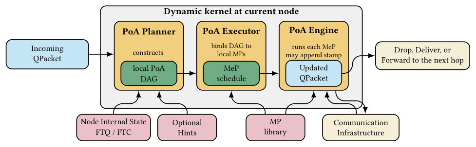
<figcaption class="paper-figure-caption"><b>Fig 1.</b> Figure 1: Dynamic-Kernel pipeline triggered by an incoming QPacket. The Planner constructs a local PoA from the QPacket meta-header and node-local state. The Executor schedules feasible actions and binds them to MPs/MePs. The Engine runs these MPs/MePs and appends stamps only at action-commit boundaries before forwarding, delivering, or dropping the QPacket.</figcaption>
</figure>
<figure class="paper-figure-card">
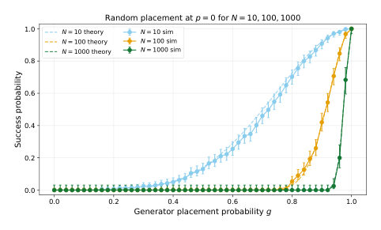
<figcaption class="paper-figure-caption"><b>Fig 2.</b> Figure 2: Success probability of random generator placement with probability 𝑔without pre-distributed entanglement. Markers show Q2NS simulation results with 95% binomial confidence intervals; dashed curves show the analytical prob- ability that no two adjacent nodes both lack MPGEN.</figcaption>
</figure>
<figure class="paper-figure-card">
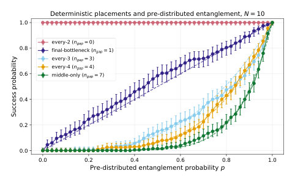
<figcaption class="paper-figure-caption"><b>Fig 3.</b> Figure 3: Success probability for deterministic generator- capability placements as a function of the pre-distributed entanglement probability 𝑝for 𝑁= 10. Markers show Q2NS simulation results with 95% binomial confidence intervals, while dashed curves show the analytical probability 𝑝𝑛gen-unres.</figcaption>
</figure>
<figure class="paper-figure-card">
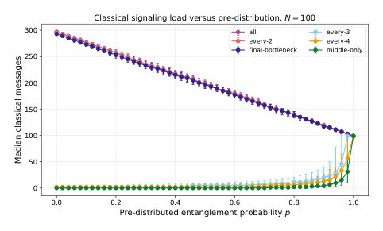
<figcaption class="paper-figure-caption"><b>Fig 4.</b> Figure 4: Classical signaling load versus pre-distributed en- tanglement probability for 𝑁= 100. Increasing 𝑝reduces LINK_PREP associated signaling, but can enable further pro- gression before failure for unresolvable link placements.</figcaption>
</figure>
<figure class="paper-figure-card">
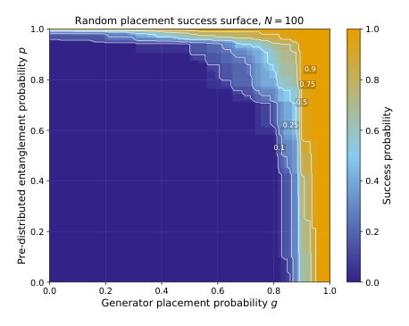
<figcaption class="paper-figure-caption"><b>Fig 5.</b> Figure 5: Success probability under random generator place- ment with probability 𝑔and pre-distributed entanglement with probability 𝑝for 𝑁= 100. For each pair (𝑔, 𝑝), the color indicates the empirical success probability. Contours inter- polate samples at iso-success levels 0.1, 0.25, 0.5, 0.75, and 0.9.</figcaption>
</figure>
</div>

<p><strong>Summary.</strong> This work presents an executable simulation framework for quantum repeater chains, using a novel Dynamic-Kernel/QPacket logic built on Q2NS/ns-3. It rigorously tests how entanglement distribution protocols behave under varying resource constraints, showing that overhead is dictated by complex policy interactions rather than just physical size. The study validates the platform's ability to support reproducible, policy-specific evaluation of quantum network concepts.</p>
<p><strong>Why it may be interesting.</strong> While focused on networking, the concept of stateful, resource-constrained, and policy-driven local computation (the Dynamic Kernel) mirrors complex control mechanisms found in open quantum systems modeling, where local state updates dictate global evolution.</p>
<details>
<summary>Detailed structure</summary>
<p><strong>Main problem.</strong> The paper addresses the challenge of designing and simulating quantum network protocols, specifically entanglement distribution over repeater chains, which requires logic beyond classical layering.</p>
<p><strong>Main result.</strong> The study demonstrates that the overhead and cost of quantum packet forwarding are shaped not just by encoding, but critically by the policy choices and the availability of network resources.</p>
<p><strong>Method.</strong> The authors implemented a specialized executable logic, the Dynamic-Kernel/QPacket, within the Q2NS/ns-3 simulation framework to model node-local decision-making pipelines.</p>
<p><strong>Model / system.</strong> The system models a linear quantum repeater chain where entanglement is the primary resource. The core mechanism involves a Dynamic Kernel executing a Planner-Executor-Engine pipeline upon receiving a QPacket.</p>
<p><strong>Key observables.</strong> Signaling load, QPacket meta-header growth, link-resolvability success probability, and accumulated forwarding delay.</p>
<p><strong>Important parameters / regimes.</strong> Pre-distributed entanglement probability (p), generator placement probability (g), and chain length (N).</p>
<p><strong>Assumptions / limitations.</strong> The implementation is deliberately scoped to a linear chain topology, and the Dynamic Kernel processing time is assumed instantaneous to isolate forwarding effects.</p>
<p><strong>Figures summary.</strong> Figures illustrate the Dynamic-Kernel pipeline, show the linear growth of QPacket size with chain length, and plot classical signaling load and success probability as functions of pre-distributed entanglement probability.</p>
<p><strong>Paper structure.</strong> The paper introduces the need for beyond-layering protocols, details the QPacket/Dynamic-Kernel mechanism (Planner-Executor-Engine), and then presents simulations analyzing how varying resource availability (p, g) affects performance metrics like success probability and signaling load.</p>
</details>
<details>
<summary>Abstract</summary>
<p>The Quantum Internet operates on entanglement, a non-local, non-copyable, stateful network resource, which motivates protocol organization beyond classical layering. We present a first executable specialization of the Dynamic Kernel/QPacket logic from the beyond-layering protocol suite, targeting entanglement distribution over a linear quantum repeater chain. The implementation builds on Q2NS, an ns-3-based quantum-network simulation module available through the ns-3 App Store. It realizes QPacket meta-headers with service intent and append-only action-commit stamps processed by node-local Dynamic Kernels organized as a Planner--Executor--Engine pipeline, while being deliberately scoped to an analytically verifiable service and policy. Within this scoped setting, we study node heterogeneity through a link-preparation policy that accounts for pre-distributed entanglement and uneven entanglement-generation support across nodes, including delegation via QPacket forwarding. Simulations verify analytical link-resolvability models and expose signaling load, forwarding behavior, and QPacket meta-header growth. Results show that QPacket overhead is shaped by more than just encoding, including policy choices and available network resources. Overall, this study demonstrates how the Q2NS/ns-3 substrate can support reproducible, policy-specific evaluation of quantum-native protocol-suite concepts.</p>
</details>
<p><sub><a href="#top">↑ back to top</a></sub></p>

<p><a id="paper-2608.24261"></a></p>
<h3 id="boundary-free-energies-quenched-mixing-and-gibbs-state-selection-in-disordered-ising-models"><a href="http://arxiv.org/abs/2608.24261v1">Boundary Free Energies, Quenched Mixing, and Gibbs-State Selection in Disordered Ising Models</a></h3>
<p><strong>Authors:</strong> Mauris Chueng, Hexiang Wang, Keheng Zhu<br>
<strong>Type:</strong> theory · <strong>Category:</strong> disordered systems and neural networks · <strong>PDF:</strong> <a href="https://arxiv.org/pdf/2608.24261v1">https://arxiv.org/pdf/2608.24261v1</a><br>
<strong>Analysis basis:</strong> full PDF text, analyzed in chunks
<strong>Topic relevance:</strong> <code>analog quantum simulation</code> <strong>2/5</strong> · <code>Keldysh / 2PI / non-Gaussian methods</code> <strong>1/5</strong></p>
<div class="figure-strip-hint">↔ Scroll figures horizontally</div>
<div class="paper-figures-scroll">
<figure class="paper-figure-card">
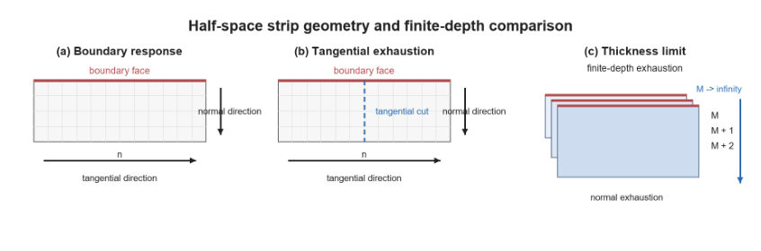
<figcaption class="paper-figure-caption"><b>Fig 1.</b> Figure 1: Slab geometry. Panel (a) marks the boundary bonds of amplitude r; panel (b) shows a tangential cut used in almost-additivity; panel (c) shows the normal exhaustion, with the graphic depth M playing the role of the textual depth L. All other finite-volume faces are free.</figcaption>
</figure>
<figure class="paper-figure-card">
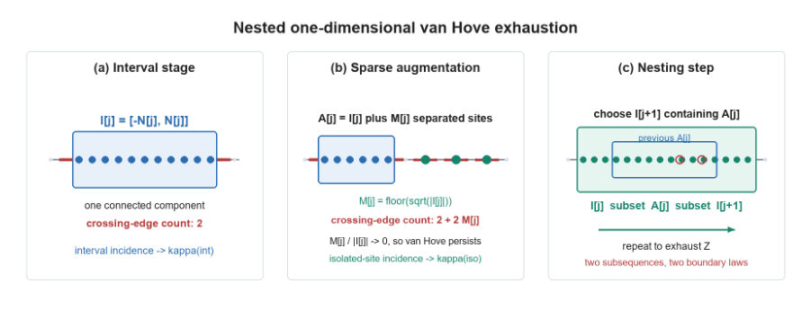
<figcaption class="paper-figure-caption"><b>Fig 2.</b> Figure 2: The nested one-dimensional exhaustion in Theorem 9.2. An interval Ij has two crossing edges. The augmented set Aj adds Mj = ⌊ p</figcaption>
</figure>
</div>

<p><strong>Summary.</strong> This work provides a rigorous mathematical analysis of disordered Ising models, focusing on how boundary conditions and disorder affect the system's free energy. The authors establish key convergence theorems for boundary free energies and prove conditions under which the system's thermodynamic state is uniquely determined (Gibbs-state selection). It advances the mathematical understanding of disordered critical phenomena.</p>
<p><strong>Why it may be interesting.</strong> While focused on classical statistical mechanics, the rigorous mathematical techniques used—especially those involving localization, convergence of random fields, and controlling fluctuations in disordered systems—are highly relevant to understanding quantum phase transitions and quantum disordered systems.</p>
<details>
<summary>Detailed structure</summary>
<p><strong>Main problem.</strong> The paper investigates the mathematical properties of boundary free energies, quenched mixing, and the selection of the correct Gibbs state in disordered Ising models.</p>
<p><strong>Main result.</strong> Key results include proving the existence of fixed-depth tangential pressure and establishing Gibbs-state selection independence under specific mixing conditions.</p>
<p><strong>Method.</strong> The analysis employs advanced techniques from statistical mechanics, including concentration inequalities, derivative representations derived from concavity, and stochastic localization arguments.</p>
<p><strong>Model / system.</strong> The study focuses on nearest-neighbor disordered Ising models, characterized by random couplings ($J$) and analyzed on finite volumes that are extrapolated to infinite limits (e.g., half-spaces or infinite strips).</p>
<p><strong>Key observables.</strong> Boundary free energies ($\Delta F$), tangential pressure ($p_L(r)$), boundary-response mixing (BRM), and seam-flip differences ($D_n$).</p>
<p><strong>Important parameters / regimes.</strong> Inverse temperature ($eta$), dimension ($d \ge 2$), and the mixing condition $(2d-1)\mathbb E	anh(eta|J|) < 1$.</p>
<p><strong>Assumptions / limitations.</strong> The analysis relies on assumptions regarding the geometry (regularity), the existence of certain mixing conditions (e.g., quenched exponential boundary-response mixing), and the ability to control fluctuations via concentration bounds.</p>
<p><strong>Figures summary.</strong> Figure 1 illustrates the geometry of the slab, marking boundary bonds and different types of cuts (tangential, normal). Figure 2 shows the nested one-dimensional exhaustion used in convergence proofs.</p>
<p><strong>Paper structure.</strong> The paper develops results by analyzing finite-volume identities, establishing the existence and properties of the tangential pressure limit, proving convergence results under mixing conditions, and concluding with discussions on necessary localization bounds and open problems.</p>
</details>
<details>
<summary>Abstract</summary>
<p>We study boundary free energies and half-space responses in nearest-neighbor disordered Ising models. First, we prove the existence of fixed-depth tangential pressure and identify its derivative almost everywhere with the limiting boundary response. Second, under quenched exponential boundary-response mixing, we prove Gibbs-state selection independence and exponential convergence of finite-depth pressures. We further show that uniform one-spin mixing yields DLR uniqueness and Gaussian normal localization, and verify the required mixing conditions whenever $(2d-1)\mathbb E\tanh(β\vert{}J\vert{})<1$. Finally, we establish an all-face surface limit in the bounded Dobrushin regime and provide counterexamples that delimit general surface and stiffness claims.</p>
</details>
<p><sub><a href="#top">↑ back to top</a></sub></p>

<p><a id="paper-2608.24337"></a></p>
<h3 id="influence-of-the-inter-orbital-interaction-and-kinetic-terms-on-superconductivity-a-simple-two-orbital-hubbard-model"><a href="http://arxiv.org/abs/2608.24337v1">Influence of the inter-orbital interaction and kinetic terms on superconductivity: a simple two-orbital Hubbard model</a></h3>
<p><strong>Authors:</strong> Vito Marino, Diego Florez-Ablan, Luca F. Tocchio, Massimo Capone, Federico Becca<br>
<strong>Type:</strong> theory · <strong>Category:</strong> strongly correlated electrons · <strong>PDF:</strong> <a href="https://arxiv.org/pdf/2608.24337v1">https://arxiv.org/pdf/2608.24337v1</a><br>
<strong>Analysis basis:</strong> full PDF text, analyzed in chunks
<strong>Topic relevance:</strong> <code>analog quantum simulation</code> <strong>2/5</strong> · <code>Keldysh / 2PI / non-Gaussian methods</code> <strong>1/5</strong></p>
<div class="figure-strip-hint">↔ Scroll figures horizontally</div>
<div class="paper-figures-scroll">
<figure class="paper-figure-card">
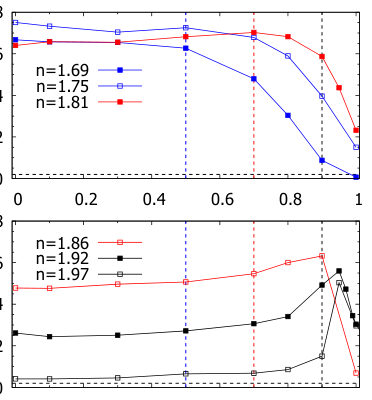
<figcaption class="paper-figure-caption"><b>Fig 1.</b> FIG. 1. Superconducting order parameter of Eq. (19) for α = β (e.g., for intra-orbital singlets) and different elec- tron densities between n = 1.69 and n = 2. The horizontal dashed line indicates the superconducting order parameter at n = 1.69 in the noninteracting case (U = U ′ = 0). The dashed vertical lines correspond to the values of U ′/U shown in Fig. 3. For clarity, the various electron densities are split in two panels: n = 1.69, 1.75, and 1.81 (upper panel) and n = 1.86, 1.92, and 1.97 (lower panel). Data are shown for the L = 12 cluster and errorbars are smaller than the point size.</figcaption>
</figure>
<figure class="paper-figure-card">
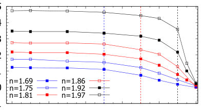
<figcaption class="paper-figure-caption"><b>Fig 2.</b> FIG. 2. Intra-orbital singlet BCS variational parameter ∆of Eq. (8) as a function of U ′/U for different electron densities n in a range from 1.69 to 1.97.</figcaption>
</figure>
<figure class="paper-figure-card">
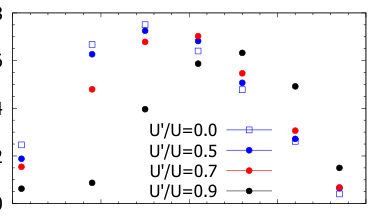
<figcaption class="paper-figure-caption"><b>Fig 3.</b> FIG. 3. Superconducting order parameter of Eq. (19) for different values of U ′/U as a function of the electron density n. The full circles correspond to the vertical dashed lines in Fig. 1. The results for U ′ = 0 are also reported for compari- son. Data are shown for the L = 12 cluster and errorbars are smaller than the point size.</figcaption>
</figure>
<figure class="paper-figure-card">
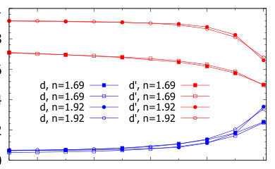
<figcaption class="paper-figure-caption"><b>Fig 4.</b> FIG. 4. Intra- and inter-doublon density d = D/N and d′ = D′/N [see Eqs. (15) and (16)] as a function of U ′/U for n = 1.69 and n = 1.92 computed by VMC (full symbols). The DMFT results (empty symbols) are also reported for compar- ison. The VMC calculations are performed on the L = 12 cluster.</figcaption>
</figure>
<figure class="paper-figure-card">
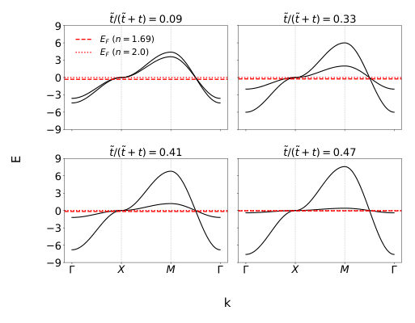
<figcaption class="paper-figure-caption"><b>Fig 5.</b> FIG. 6. Non-interacting bands obtained from Eq. (21), for ˜t/t = 0.1 (upper-left panel), 0.3 (upper-right panel), 0.7 (lower-left panel), and 0.9 (lower-right panel). The path in the BZ is Γ →X →M →Γ, with Γ = (0, 0), X = (π, 0), and M = (π, π). The Fermi energies for n = 1.69 and 2 are also shown.</figcaption>
</figure>
</div>

<p><strong>Summary.</strong> This work analyzes superconductivity in a two-orbital Hubbard model, demonstrating that inter-orbital interactions and hopping terms are crucial for enhancing pairing. Using VMC, the authors show that these orbital degrees of freedom stabilize superconductivity by coupling different electronic bands, which is a key feature distinguishing it from single-band models.</p>
<p><strong>Why it may be interesting.</strong> The detailed analysis of how orbital hybridization ($    ilde{t}$) modifies the pairing mechanism by coupling different energy scales (flat vs. broad bands) provides insights into unconventional pairing mechanisms beyond simple single-band descriptions.</p>
<details>
<summary>Detailed structure</summary>
<p><strong>Main problem.</strong> The study investigates how inter-orbital interactions and kinetic terms influence the emergence and magnitude of superconductivity in a multi-orbital system.</p>
<p><strong>Main result.</strong> Inter-orbital terms ($U'$ and $ ilde{t}$) significantly enhance superconducting correlations compared to single-orbital models, with the enhancement being driven by the coexistence of flat and broad electronic bands.</p>
<p><strong>Method.</strong> The research employs Variational Monte Carlo (VMC) techniques using Jastrow-Slater wave functions, supplemented by comparisons with Dynamical Mean-Field Theory (DMFT).</p>
<p><strong>Model / system.</strong> The system is modeled by a minimal two-orbital Hubbard Hamiltonian, incorporating intra-orbital repulsion ($U$), inter-orbital repulsion ($U'$), and hopping terms ($t$ and $    ilde{t}$).</p>
<p><strong>Key observables.</strong> Superconducting pairing correlations ($\phi^2_{\alphaeta}$), condensation energy ($\Delta E$), and orbital/inter-orbital doublon densities.</p>
<p><strong>Important parameters / regimes.</strong> The ratio $U/t$, the inter-orbital repulsion $U'/U$, and the ratio of inter-orbital to intra-orbital hopping $   ilde{t}/t$.</p>
<p><strong>Assumptions / limitations.</strong> The analysis focuses on uniform nonmagnetic states with an explicit pairing amplitude, and the model does not include Hund's coupling.</p>
<p><strong>Figures summary.</strong> Figures illustrate the superconducting order parameter vs. electron density and vs. hopping ratios, and show the decomposition of the condensation energy into contributions from intra-orbital potential, inter-orbital potential, and kinetic energy.</p>
<p><strong>Paper structure.</strong> The paper systematically analyzes the effects of $U'$ (at fixed $   ilde{t}=0$) and then introduces $   ilde{t}$, showing how each term modifies the superconducting dome and the underlying electronic structure, culminating in a discussion of the interplay between orbital character and pairing.</p>
</details>
<details>
<summary>Abstract</summary>
<p>We investigate a minimal two-orbital Hubbard model with intra- and inter-orbital nearest-neighbor hopping $t$ and $\tilde{t}$, as well as intra- and inter-orbital density-density interactions $U$ and $U'$ by means of variational ansätze based on Jastrow-Slater wave functions within quantum Monte Carlo techniques. To focus on the electronic mechanisms of superconductivity, we restrict the variational ansätze to uniform nonmagnetic states with an explicit pairing amplitude and compute the pairing correlations as a function of filling and model parameters. At $U/t=10$, superconducting correlations are highly enhanced by the presence of inter-orbital terms, $U'$ and $\tilde{t}$. For $\tilde{t}=0$, a finite value of $U'$ effectively screens the intra-orbital repulsion $U$, producing a shift in the superconducting dome. Consequently, inter-orbital repulsion yields a sizable increase in electron pairing compared to the single-orbital baseline. Furthermore, introducing a finite $\tilde{t}$ provides an additional boost to superconducting correlations, an effect driven by the simultaneous presence of flat and broad bands in the electronic structure.</p>
</details>
<p><sub><a href="#top">↑ back to top</a></sub></p>

<p><a id="paper-2608.23904"></a></p>
<h3 id="reentrance-and-temperature-chaos-in-the-math499math-spin-ising-spin-glass"><a href="http://arxiv.org/abs/2608.23904v1">Reentrance and temperature chaos in the $p$-spin Ising spin glass</a></h3>
<p><strong>Authors:</strong> Hidetoshi Nishimori<br>
<strong>Type:</strong> theory · <strong>Category:</strong> disordered systems and neural networks · <strong>PDF:</strong> <a href="https://arxiv.org/pdf/2608.23904v1">https://arxiv.org/pdf/2608.23904v1</a><br>
<strong>Analysis basis:</strong> full PDF text, analyzed in chunks
<strong>Topic relevance:</strong> <code>analog quantum simulation</code> <strong>2/5</strong> · <code>Keldysh / 2PI / non-Gaussian methods</code> <strong>1/5</strong></p>
<div class="figure-strip-hint">↔ Scroll figures horizontally</div>
<div class="paper-figures-scroll">
<figure class="paper-figure-card">
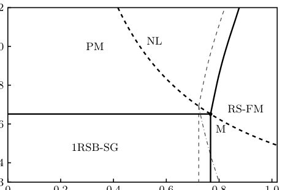
<figcaption class="paper-figure-caption"><b>Fig 1.</b> FIG. 1. Schematic phase diagram of the present model for p = 3 [43]. Thick solid lines denote equilibrium phase boundaries. The horizontal line is the PM–1RSB-SG transition, which is independent of j0; the gently curved line extending upward to the right from the triple point M is the first-order PM–RS-FM transition; and the almost vertical line extending downward from M is the RS-FM–1RSB-SG phase boundary. The thick dashed line is the Nishimori line (NL), T = 1/(2j0), which passes through the triple point M and does not enter the SG phase. The thin dashed line is the metastability limit (spinodal line) of the FM phase. Since only equilibrium states are considered in the present paper, the...</figcaption>
</figure>
<figure class="paper-figure-card">
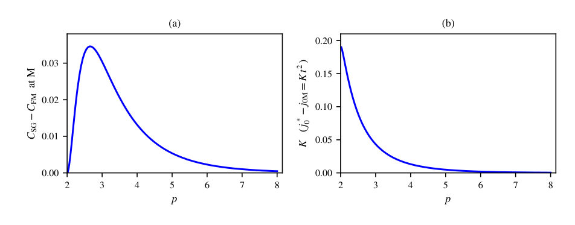
<figcaption class="paper-figure-caption"><b>Fig 2.</b> FIG. 2. p dependence of the driving quantity for reentrance and of the curvature. (a) Specific-heat difference CSG −CFM at the triple point. It approaches zero at both endpoints, p →2+ and p →∞. As shown in Sec. III D, the behavior is (27/32)(p −2)2</figcaption>
</figure>
<figure class="paper-figure-card">
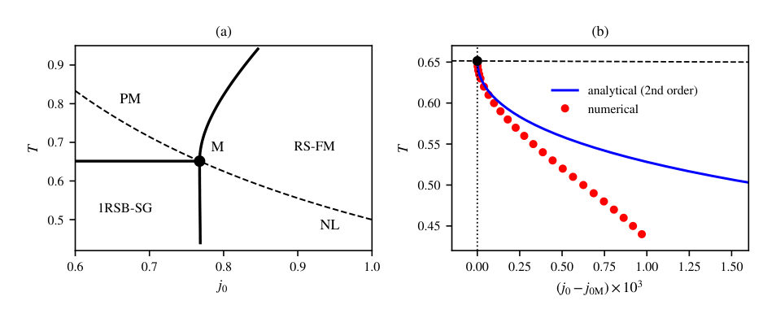
<figcaption class="paper-figure-caption"><b>Fig 3.</b> FIG. 3. Phase diagram for p = 3. (a) Overall phase diagram. All solid lines are phase boundaries. This is a quantitatively calculated version of the schematic diagram in Fig. 1, with the spinodal line (thin dashed line) and the AT line (dash-dotted line) omitted. Horizontal line: PM–SG transition (Tc = 0.651385). Almost vertical line extending downward from M: FM–SG phase boundary. Line extending upward to the right from M: first-order PM–FM transition line. Dashed line: Nishimori line T = 1/(2j0). Black dot: triple point M. On this scale the FM–SG boundary is indistinguishable from a vertical line. (b) Enlarged view near the phase boundary. The horizontal axis is 103 times the deviation...</figcaption>
</figure>
</div>

<p><strong>Summary.</strong> This theoretical paper analyzes the $p$-spin Ising spin glass model to establish a link between reentrant phase transitions and temperature chaos. By showing that the phase boundary reenters, the authors deduce that the system must exhibit temperature chaos, meaning the spin-state overlap vanishes for all pairs of temperatures within the spin glass phase. This advances the understanding of complex glassy dynamics in disordered quantum systems.</p>
<p><strong>Why it may be interesting.</strong> The study of spin glasses and their phase transitions is foundational to understanding complex energy landscapes, which has parallels in optimizing quantum circuits or analyzing complex many-body quantum dynamics.</p>
<details>
<summary>Detailed structure</summary>
<p><strong>Main problem.</strong> The paper investigates the physical relationship between two unusual properties in spin glasses: reentrant phase transitions and temperature chaos.</p>
<p><strong>Main result.</strong> The authors analytically demonstrate that the ferromagnetic–spin glass boundary is reentrant for the $p$-spin Ising spin glass, which strongly suggests the existence of temperature chaos across the entire spin glass phase.</p>
<p><strong>Method.</strong> The analysis involves expanding the free energy around the triple point and utilizing the contrapositive of a proposition relating reentrance to the existence of temperature chaos.</p>
<p><strong>Model / system.</strong> The system studied is the fully connected Ising $p$-spin glass with a ferromagnetic bias, described by a Hamiltonian involving $p$-body interactions. The analysis uses replica calculations and free energy minimization techniques.</p>
<p><strong>Key observables.</strong> The primary observables are the curvature of the ferromagnetic–spin glass phase boundary and the two-temperature spin-state overlap distribution, $P_2(x | eta_1, eta_2)$.</p>
<p><strong>Important parameters / regimes.</strong> The key parameters include the spin interaction order $p$ (specifically $p>2$), the inverse temperatures ($eta_1, eta_2$), and the system size $N$ (taken to infinity).</p>
<p><strong>Assumptions / limitations.</strong> The core assumption is that if the overlap vanishes for one temperature pair, it implies the vanishing of overlap for all pairs within the spin glass phase. The analysis also relies on the NOO proposition and the validity of the replica calculations.</p>
<p><strong>Figures summary.</strong> The notes reference a schematic phase diagram for $p=3$ showing the PM, 1RSB-SG, RS-FM, and Nishimori Line boundaries, and a table listing calculated values for various parameters across different $p$.</p>
<p><strong>Paper structure.</strong> The paper develops the theoretical framework by establishing the logical connection between reentrance and temperature chaos, provides an explicit analytical calculation for the $p$-spin model showing reentrance, and supports this conclusion with independent two-temperature replica calculations.</p>
</details>
<details>
<summary>Abstract</summary>
<p>Reentrant transitions and temperature chaos are two unusual properties of spin glasses and had long been considered physically unrelated. We recently established a logical relation between these two phenomena [Phys. Rev. E 112, 044140 (2025)]. In the present paper, we provide an explicit example of this logical relation in the fully connected Ising $p$-spin glass with a ferromagnetic bias. By expanding the free energy around the triple point, we show analytically that the ferromagnetic--spin glass boundary is reentrant in the vicinity of the triple point throughout the examined range of finite $p>2$. It then follows from the above logical relation that there exists at least one pair of distinct temperatures in the spin glass phase for which the overlap of spin configurations vanishes. This is a necessary condition for temperature chaos, but it would be quite unusual for the overlap to vanish only for selected temperature pairs but not for others within a single spin glass phase. These results therefore strongly suggest the existence of temperature chaos in the sense that the overlaps of spin configurations vanish for all temperature pairs throughout the spin glass phase. Independent evidence for this behavior is provided by a two-temperature replica calculation.</p>
</details>
<p><sub><a href="#top">↑ back to top</a></sub></p>

<p><a id="paper-2608.23935"></a></p>
<h3 id="a-categorical-framework-for-wave-particle-complementarity-continuous-observable-structures-and-fourier-pontryagin-duality"><a href="http://arxiv.org/abs/2608.23935v1">A Categorical Framework for Wave-Particle Complementarity: Continuous Observable Structures and Fourier-Pontryagin Duality</a></h3>
<p><strong>Authors:</strong> Samuel B. Soltau<br>
<strong>Type:</strong> theory · <strong>Category:</strong> other · <strong>PDF:</strong> <a href="https://arxiv.org/pdf/2608.23935v1">https://arxiv.org/pdf/2608.23935v1</a><br>
<strong>Analysis basis:</strong> full PDF text, analyzed in chunks
<strong>Topic relevance:</strong> <code>quantum measurements</code> <strong>2/5</strong></p>
<div class="figure-strip-hint">↔ Scroll figures horizontally</div>
<div class="paper-figures-scroll">
<figure class="paper-figure-card">
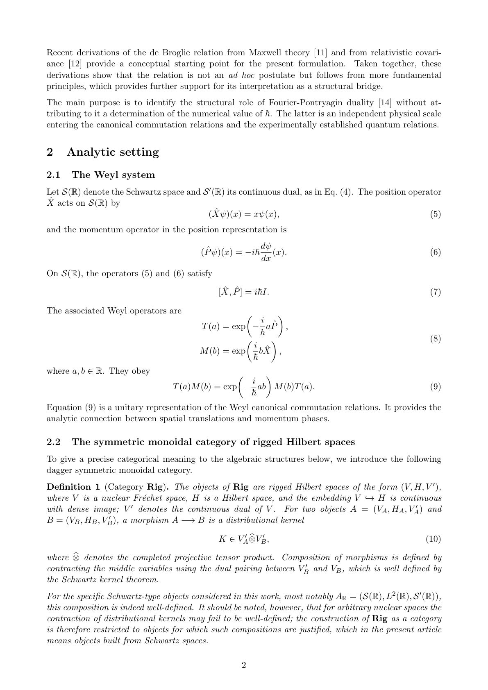
<figcaption class="paper-figure-caption"><b>Fig 1.</b> Low-resolution page preview, page 2</figcaption>
</figure>
<figure class="paper-figure-card">
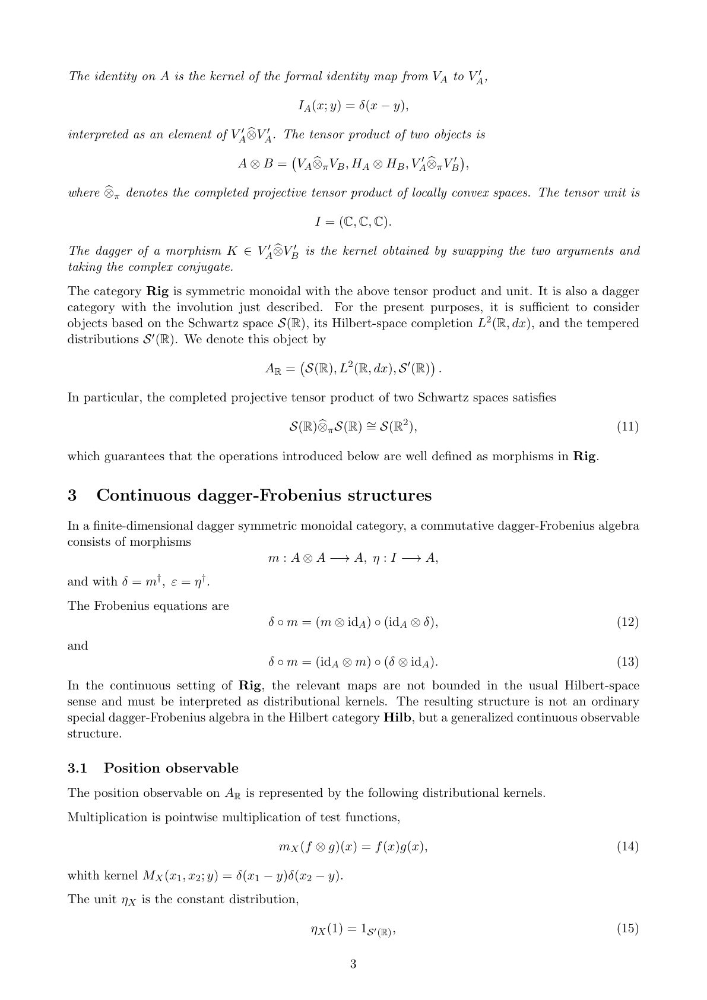
<figcaption class="paper-figure-caption"><b>Fig 2.</b> Low-resolution page preview, page 3</figcaption>
</figure>
<figure class="paper-figure-card">

<figcaption class="paper-figure-caption"><b>Fig 3.</b> Low-resolution page preview, page 4</figcaption>
</figure>
<figure class="paper-figure-card">

<figcaption class="paper-figure-caption"><b>Fig 4.</b> Low-resolution page preview, page 5</figcaption>
</figure>
<figure class="paper-figure-card">

<figcaption class="paper-figure-caption"><b>Fig 5.</b> Low-resolution page preview, page 6</figcaption>
</figure>
</div>

<p><strong>Summary.</strong> This paper develops a highly abstract mathematical framework using category theory and Pontryagin duality to formalize wave-particle complementarity. It demonstrates that the mathematical structure of this complementarity is determined by duality, but the physical scale, embodied by Planck's constant $\hbar$, must be imposed externally via the canonical commutation relations. It offers a deep, structural view of the de Broglie relation.</p>
<p><strong>Why it may be interesting.</strong> This work provides a highly abstract, foundational mathematical underpinning for a core concept in quantum mechanics (complementarity), which could inspire new ways to model measurement processes or quantum field theory structures.</p>
<details>
<summary>Detailed structure</summary>
<p><strong>Main problem.</strong> The paper aims to rigorously formulate wave-particle complementarity and the de Broglie relation within the advanced mathematical framework of categorical quantum mechanics.</p>
<p><strong>Main result.</strong> It shows that while Pontryagin duality determines the structural form of complementarity, the physical constant $\hbar$ must be supplied externally via the Weyl commutation relations to yield the correct de Broglie relation $\lambda = h/p$.</p>
<p><strong>Method.</strong> The authors employ categorical quantum mechanics on rigged Hilbert spaces, using continuous dagger-Frobenius structures to represent position and momentum operators, and utilizing Pontryagin duality to relate these structures via the Fourier transform.</p>
<p><strong>Model / system.</strong> The model is the quantum mechanical description of a particle, analyzed using abstract mathematical structures like rigged Hilbert spaces and categorical formalism, rather than a specific physical Hamiltonian or lattice model.</p>
<p><strong>Key observables.</strong> Position ($\hat{X}$), momentum ($\hat{P}$), and the associated wave-particle character pairing $\chi_p(x) = \exp(ipx/\hbar)$.</p>
<p><strong>Important parameters / regimes.</strong> Planck's constant ($\hbar$), the scaling parameter $\alpha$, and the physical constant $h$.</p>
<p><strong>Assumptions / limitations.</strong> The framework assumes the validity of the categorical structure on Schwartz spaces and treats the identification $\alpha = \hbar$ as a necessary physical input fixed by the Weyl commutation relations.</p>
<p><strong>Figures summary.</strong> Figure 1 illustrates the Fourier correspondence between the position and momentum representations.</p>
<p><strong>Paper structure.</strong> The paper builds by first establishing the mathematical setting using categorical quantum mechanics and Pontryagin duality. It then derives the Fourier transform relating the two observable structures, demonstrating that the structural relationship is dictated by duality, while the physical scale ($\hbar$) is fixed by the canonical commutation relations.</p>
</details>
<details>
<summary>Abstract</summary>
<p>We present a formulation wave-particle complementarity and the de Broglie relation $λ=h/p$ within the framework of categorical quantum mechanics on rigged Hilbert spaces. Position and momentum are represented by continuous dagger-Frobenius structures associated with the locally compact abelian group $\mathbb{R}$ and its Pontryagin dual. The Fourier transform is the unitary implementation of Pontryagin duality and relates the two observable structures. We show that a general character pairing $χ_p^{(α)}(x)=\exp(ipx/α)$ yields a one-parameter family of unitarily equivalent Fourier transforms. Pontryagin duality therefore determines the structural form of the complementarity, but not the numerical value of Planck's constant. The identification $α=\hbar$ is a physical input fixed by the Weyl commutation relations. With this input, the spatial period of the character yields $λ=h/p$.</p>
</details>
<p><sub><a href="#top">↑ back to top</a></sub></p>

<p><a id="paper-2608.24832"></a></p>
<h3 id="certified-randomness-without-structure-against-shallow-query-adversaries"><a href="http://arxiv.org/abs/2608.24832v1">Certified Randomness without Structure Against Shallow-Query Adversaries</a></h3>
<p><strong>Authors:</strong> Dakshita Khurana, Bhaskar Roberts, Avishay Tal<br>
<strong>Type:</strong> theory · <strong>Category:</strong> quantum information and computing · <strong>PDF:</strong> <a href="https://arxiv.org/pdf/2608.24832v1">https://arxiv.org/pdf/2608.24832v1</a><br>
<strong>Analysis basis:</strong> full PDF text, analyzed in chunks
<strong>Topic relevance:</strong> <code>quantum measurements</code> <strong>2/5</strong></p>
<div class="figure-strip-hint">↔ Scroll figures horizontally</div>
<div class="paper-figures-scroll">
<figure class="paper-figure-card">

<figcaption class="paper-figure-caption"><b>Fig 1.</b> Low-resolution page preview, page 2</figcaption>
</figure>
<figure class="paper-figure-card">

<figcaption class="paper-figure-caption"><b>Fig 2.</b> Low-resolution page preview, page 3</figcaption>
</figure>
<figure class="paper-figure-card">

<figcaption class="paper-figure-caption"><b>Fig 3.</b> Low-resolution page preview, page 4</figcaption>
</figure>
<figure class="paper-figure-card">

<figcaption class="paper-figure-caption"><b>Fig 4.</b> Low-resolution page preview, page 5</figcaption>
</figure>
<figure class="paper-figure-card">

<figcaption class="paper-figure-caption"><b>Fig 5.</b> Low-resolution page preview, page 6</figcaption>
</figure>
</div>

<p><strong>Summary.</strong> This paper advances the field of quantum randomness by proving the security of a certifiable randomness protocol in the QROM. Crucially, it achieves this unconditionally by restricting the quantum adversary to a shallow query depth, thereby bypassing the need for the unproven Aaronson-Ambainis conjecture.</p>
<p><strong>Why it may be interesting.</strong> While the topic is quantum cryptography, the rigorous analysis of query complexity and the use of information-theoretic bounds are highly relevant to understanding the limitations and capabilities of quantum information processing.</p>
<details>
<summary>Detailed structure</summary>
<p><strong>Main problem.</strong> To prove the security of a certifiable randomness protocol in the Quantum Random Oracle Model (QROM) without relying on the unproven Aaronson-Ambainis conjecture.</p>
<p><strong>Main result.</strong> The authors unconditionally prove the certifiable randomness guarantee for the Yamakawa-Zhandry protocol against quantum adversaries making only $o(\log \lambda)$ adaptive queries.</p>
<p><strong>Method.</strong> The proof uses a two-step argument involving bounding the 'query weight' accumulated by the adversary across multiple query layers, culminating in a contradiction derived from probability bounds.</p>
<p><strong>Model / system.</strong> The analysis is set in the Quantum Random Oracle Model (QROM), involving a quantum adversary querying a random oracle $H$ to test the validity of a candidate codeword $x$ from a list-recoverable code $\mathcal{C}$.</p>
<p><strong>Key observables.</strong> Query weight ($w$), query depth ($D$), and the probability of the adversary successfully cheating ($\Pr[	ext{Event3}]$).</p>
<p><strong>Important parameters / regimes.</strong> The depth of the adversary's queries, $D = o(\log \lambda)$, and the entropy measures $\delta(\lambda)$ and $h_\infty(\lambda)$.</p>
<p><strong>Assumptions / limitations.</strong> The primary assumption is the restriction on the adversary's query depth to $o(\log \lambda)$ layers; the proof avoids the AA conjecture.</p>
<p><strong>Paper structure.</strong> The paper builds upon the YZ protocol, first establishing the necessary tools (like the Swapping Lemma) to track query weight, then proceeding through a multi-step argument that bounds the adversary's ability to accumulate weight on the correct answer $x$ when the query depth is shallow.</p>
</details>
<details>
<summary>Abstract</summary>
<p>In a recent breakthrough, Yamakawa and Zhandry (J. ACM 2024) constructed a proof of quantumness in the quantum random oracle model (QROM) in which the quantum prover samples a codeword preimage of a publicly computable function H. They conjectured that given any H, a successful prover must sample their preimage from a high-entropy distribution over possible answers. If true, this would give a certifiable randomness protocol in the quantum random oracle model. As partial evidence for their conjecture, Yamakawa and Zhandry proved the security of their certifiable randomness protocol assuming the Aaronson-Ambainis conjecture.   We prove the security of the certifiable randomness protocol of Yamakawa-Zhandry unconditionally, without relying on the unproven Aaronson-Ambainis conjecture, against low query-depth quantum adversaries: specifically, adversaries that make up to o(\log λ) adaptive quantum queries to the random oracle.</p>
</details>
<p><sub><a href="#top">↑ back to top</a></sub></p>

<p><a id="paper-2608.23698"></a></p>
<h3 id="compositionality-in-quantum-reference-frame-perspectives"><a href="http://arxiv.org/abs/2608.23698v1">Compositionality in quantum reference frame perspectives</a></h3>
<p><strong>Authors:</strong> Bruna Sahdo, Esteban Castro-Ruiz<br>
<strong>Type:</strong> theory · <strong>Category:</strong> other · <strong>PDF:</strong> <a href="https://arxiv.org/pdf/2608.23698v1">https://arxiv.org/pdf/2608.23698v1</a><br>
<strong>Analysis basis:</strong> full PDF text, analyzed in chunks
<strong>Topic relevance:</strong> <code>quantum measurements</code> <strong>2/5</strong></p>
<div class="figure-strip-hint">↔ Scroll figures horizontally</div>
<div class="paper-figures-scroll">
<figure class="paper-figure-card">

<figcaption class="paper-figure-caption"><b>Fig 1.</b> Figure 1: A reduced setup, formed by reference frames A, B and system S (inside the dashed contour) is seen as part of an extended setup, containing the additional system S3. If the internal perspectives of A and B include only the relative degrees of freedom, reversible transformations between perspectives do not behave adequately under composition. This generates issues such as the ‘paradox of the third particle’. The formalism used here restores compositionality due to the ‘extra particle’ degrees of freedom present in each perspective.</figcaption>
</figure>
<figure class="paper-figure-card">

<figcaption class="paper-figure-caption"><b>Fig 2.</b> Figure 2: Illustration of a setup containing two systems described by an external observer through the Hilbert space (HA ⊗HS)(E). Each of the systems carries the regular representation of the group G = ZN and the global external state in the picture is |ψ⟩(E) AS = 1/ √</figcaption>
</figure>
<figure class="paper-figure-card">

<figcaption class="paper-figure-caption"><b>Fig 3.</b> Figure 3: Illustration of how the present QRF formalism consistently accounts for observers’ de- scriptions. External observers can use the formalism to describe QRF perspectives following the prescription of Section 2. At the same time, the frame of such an observer can itself be internalised, so that the observer’s use of the formalism is described by a new external observer, or by another observer at the same level with an explicit frame. Across this hierarchy of perspectives, with implicit and explicit frames, everyone agrees on the invariant information contained in a subsystem and the form of the perspective internal to it. In the picture, the descriptions of two observers Eve 1 and...</figcaption>
</figure>
<figure class="paper-figure-card">

<figcaption class="paper-figure-caption"><b>Fig 4.</b> Figure 4: Mapping operators of a bipartite setup into a tripartite setup in the perspective of QRF A in a way that is consistent with a potential external quantum description.</figcaption>
</figure>
<figure class="paper-figure-card">

<figcaption class="paper-figure-caption"><b>Fig 5.</b> Figure 5: Diagram showing the relation between states of Alice’s and Bob’s perspectives for a reduced setup consistently embedded in an extended setup. The diagram highlights two properties. (1) The commutativity of the central square shows that transforming from one QRF perspective to another and then removing a subsystem is equivalent to first removing that subsystem and then transforming in the reduced setup. (2) The triangles on the right- and left-hand sides of the diagram show that the reduced state of a relative subsystem is independent of whether it is described as part of an extended setup and can be unambiguously obtained by tracing out the other systems in a given perspective.</figcaption>
</figure>
</div>

<p><strong>Summary.</strong> This paper develops a rigorous formalism to handle the composition of quantum subsystems when viewed from different Quantum Reference Frames (QRFs). It resolves inherent paradoxes by introducing 'extra-particle' degrees of freedom, establishing a consistent hierarchy of perspectives. The work shows that QRF composition is a generalization of standard quantum composition and introduces a procedure to recover classical descriptions.</p>
<p><strong>Why it may be interesting.</strong> This work tackles foundational issues in quantum foundations concerning how local descriptions (reference frames) interact with global composition rules, which is crucial for understanding measurements and information flow in complex quantum systems.</p>
<details>
<summary>Detailed structure</summary>
<p><strong>Main problem.</strong> The paper addresses the fundamental difficulty of defining compositionality when combining standard quantum composition rules with the formalism of Quantum Reference Frames (QRFs), which leads to paradoxes like the 'paradox of the third particle'.</p>
<p><strong>Main result.</strong> The authors propose a consistent formalism that resolves these paradoxes by incorporating 'extra-particle' degrees of freedom, showing that QRF composition generalizes standard quantum tensor product composition.</p>
<p><strong>Method.</strong> The methodology involves building upon a formal QRF framework, demonstrating consistency through mathematical constraints (like Equation 5), and introducing a procedure called 'classicalisation' to recover classical limits.</p>
<p><strong>Model / system.</strong> The study uses abstract quantum systems (A, B, S, $S_3$) and their descriptions relative to different observers or reference frames (QRFs). Specific toy models involve systems carrying representations of finite Abelian groups ($\mathbb{Z}_N$).</p>
<p><strong>Key observables.</strong> The consistency of state and operator representations across different observers, the set of compatible states for composition, and the phase/momentum superselection rules.</p>
<p><strong>Important parameters / regimes.</strong> The structure of the reference frames (e.g., internal vs. external observers) and the nature of the subsystems being composed.</p>
<p><strong>Assumptions / limitations.</strong> The formalism builds on a recent QRF framework; some analyses are restricted to finite Abelian groups ($\mathbb{Z}_N$).</p>
<p><strong>Figures summary.</strong> Figure 1 illustrates the setup comparing reduced versus extended systems involving three subsystems; Figure 2 illustrates the setup with two systems (A and S) viewed from an external observer (Eve).</p>
<p><strong>Paper structure.</strong> The paper progresses by first identifying the compositionality paradox in QRFs, then proposing a formalism using 'extra-particle' degrees of freedom to restore consistency, followed by characterizing the resulting structure, and concluding with the introduction and study of 'classicalisation'.</p>
</details>
<details>
<summary>Abstract</summary>
<p>Understanding a composite system through its constituents is a fundamental practice in physics. In the context of quantum reference frames (QRFs), however, combining the usual quantum-theoretic notion of composition with QRF perspectives gives rise to subtle issues, such as the 'paradox of the third particle'. Here we study in depth how to compose subsystems in QRF perspectives, building on a recent formalism for QRFs [E$.$Castro-Ruiz and O$.$Oreshkov, 2025]. We first show how the frames of external observers can be internalised and treated within the framework. This establishes a consistent hierarchy of QRF perspectives, which we use to define the adding and removing of subsystems. We then explain how, owing to the so-called 'extra-particle' degrees of freedom, the formalism gives a consistent treatment of subsystems, avoiding any paradoxes by construction. Consistency then implies that composing subsystems in a QRF perspective differs from, and generalises, the standard quantum-theoretic case. In particular, not every state can be appended in tensor-product form relative to a QRF, and we characterise the set of compatible states. Finally, we introduce 'classicalisation', a procedure that recovers a classical-like perspective from a general QRF. This procedure circumvents the aforementioned state restrictions but carries a different operational meaning, which we study through a concrete example.</p>
</details>
<p><sub><a href="#top">↑ back to top</a></sub></p>

<p><a id="paper-2608.24248"></a></p>
<h3 id="critical-bifurcation-and-deconfined-quantum-criticality-in-an-interacting-cluster-ising-chain"><a href="http://arxiv.org/abs/2608.24248v1">Critical bifurcation and deconfined quantum criticality in an interacting cluster Ising chain</a></h3>
<p><strong>Authors:</strong> Sourabh, Bachana Beradze, Mikheil Tsitsishvili, Alexander Nersesyan, Titas Chanda<br>
<strong>Type:</strong> theory · <strong>Category:</strong> statistical mechanics · <strong>PDF:</strong> <a href="https://arxiv.org/pdf/2608.24248v1">https://arxiv.org/pdf/2608.24248v1</a><br>
<strong>Analysis basis:</strong> full PDF text, analyzed in chunks
<strong>Topic relevance:</strong> <code>methods for driven-dissipative</code> <strong>2/5</strong></p>
<div class="figure-strip-hint">↔ Scroll figures horizontally</div>
<div class="paper-figures-scroll">
<figure class="paper-figure-card">

<figcaption class="paper-figure-caption"><b>Fig 1.</b> FIG. 1. (Color online.) Schematic illustration of the criti- cal bifurcation in the interacting cluster Ising model and the phases it produces, in the plane of the Ising coupling λ and the interaction strength Vnn (Eqs. (1) and (12)). (a) Near the non-interacting critical point (red dot), a cluster SPT phase and a ferromagnet (y-FM) meet at the SU(2)2 WZNW point with central charge c = 3/2. Interactions split this point into an Ising line with c = 1/2 (green) and a Gaussian line with c = 1 (blue and red), which bound an intervening phase: a second ferromagnet (x-FM) for repulsive interactions, break- ing a symmetry incompatible with that of the y-FM, and a disordered phase for attractive...</figcaption>
</figure>
<figure class="paper-figure-card">

<figcaption class="paper-figure-caption"><b>Fig 2.</b> FIG. 3. (Color online.) Bipartite entanglement entropy across the four bifurcated transition lines of the interacting CIM for different bond dimensions χ ∈[48, 128]. The upper panels correspond to Vnn = 0.2 and show the cluster ↔x-FM (a) and x-FM ↔y-FM (b) transitions, whereas the lower panels cor- respond to Vnn = −0.2 and show the cluster ↔disordered (c) and disordered ↔y-FM (d) transitions. The entropy maxima locate the respective transition points for each bond dimen- sion. The insets show the finite-entanglement scaling of these maxima with the corresponding correlation lengths ξχ accord- ing to Eq. (15). The extracted central charges are consistent with c = 1/2 Ising criticality for...</figcaption>
</figure>
<figure class="paper-figure-card">

<figcaption class="paper-figure-caption"><b>Fig 3.</b> FIG. 2. (Color online.) Phase diagram of the interacting CIM described by Eq. (12) in the vicinity of the non-interacting critical point (λ, Vnn) = (1, 0). We show the bipartite entan- glement entropy S (a), the string order parameter OS (b), and the magnetizations my (c) and mx (d), obtained using VUMPS with uMPS bond dimension χ = 128. For Vnn &gt; 0, an x-FM phase with non-zero mx emerges between the clus- ter and y-FM phases; for Vnn &lt; 0, these phases are instead separated by a disordered phase, and thus the non-interacting critical point at (λ, Vnn) = (1, 0) bifurcates into two transition lines on either side of the Vnn = 0 axis. The central charges labeled in (a) are confirmed via the...</figcaption>
</figure>
<figure class="paper-figure-card">

<figcaption class="paper-figure-caption"><b>Fig 4.</b> FIG. 4. (Color online.) Magnetizations mx and my as func- tions of λ across the direct c = 1 transition between the x-FM and y-FM phases at fixed Vnn = 0.2, obtained using VUMPS with bond dimension χ = 512. The inset shows the corre- sponding results for χ = 64, where finite-entanglement effects make the transition appear considerably sharper.</figcaption>
</figure>
<figure class="paper-figure-card">

<figcaption class="paper-figure-caption"><b>Fig 5.</b> Figure 4 shows the simultaneous and continuous van- ishing of mx and my at the same critical point. The comparison between χ = 64 and χ = 512 shows that the continuous behavior is resolved only once the finite- entanglement correlation length is large enough. To- gether with the central charge c = 1 obtained in Sec. III, these results establish a direct continuous transition with diverging correlation length between the two Landau- incompatible FM phases. The simultaneous vanishing of mx and my suggests that the two Landau-incompatible orders are related by an emergent continuous rotation at criticality. Phe- nomenologically, this can be described by a compact an- gular field ϑ(x) ≡ϑ(x) +...</figcaption>
</figure>
</div>

<p><strong>Summary.</strong> This work analyzes the quantum phase transitions in an interacting cluster Ising chain, demonstrating how a weak interaction causes a critical bifurcation from an initial high-symmetry critical point. The study successfully maps out a deconfined quantum critical line characterized by emergent O(2) symmetry, using a combination of tensor-network methods and weak-coupling field theory.</p>
<p><strong>Why it may be interesting.</strong> The detailed mapping of quantum phase transitions, especially the realization of DQC and the connection to specific universality classes (like the eight-vertex model), provides deep insights into strongly correlated quantum matter.</p>
<details>
<summary>Detailed structure</summary>
<p><strong>Main problem.</strong> The paper investigates the critical bifurcation and the nature of deconfined quantum criticality (DQC) in an interacting cluster Ising chain.</p>
<p><strong>Main result.</strong> The interaction splits the non-interacting critical point into two distinct critical lines (Ising and Gaussian), leading to a DQC line with emergent O(2) symmetry, which is captured by weak-coupling field theory.</p>
<p><strong>Method.</strong> The study employs tensor-network methods and weak-coupling field theory, supplemented by numerical simulations (MPS) to analyze the phase diagram.</p>
<p><strong>Model / system.</strong> The system is the cluster Ising chain (CIM) augmented with a nearest-neighbor interaction. The non-interacting limit exhibits an O(3) symmetry and a critical point at c=3/2.</p>
<p><strong>Key observables.</strong> Bipartite entanglement entropy (S), string order parameter (OS), and magnetizations in x, y, and z directions.</p>
<p><strong>Important parameters / regimes.</strong> The interaction strength ($V_{	ext{nn}}$) and the coupling constants ($\lambda$) are key parameters controlling the phase transitions.</p>
<p><strong>Assumptions / limitations.</strong> The weak-coupling theory is assumed valid in the analyzed regimes, though simulations reveal first-order transitions beyond its scope.</p>
<p><strong>Figures summary.</strong> Figures schematically illustrate the critical bifurcation, showing the splitting of the initial critical point into Ising (c=1/2) and Gaussian (c=1) lines, and mapping out the subsequent DQC line and floating phase.</p>
<p><strong>Paper structure.</strong> The paper analyzes the non-interacting limit (O(3) symmetry, c=3/2), then introduces the interaction which causes a critical bifurcation into two separate critical lines. It then analyzes the DQC line connecting two ferromagnets and the subsequent floating phase, concluding with the failure of the theory at strong coupling.</p>
</details>
<details>
<summary>Abstract</summary>
<p>We investigate the cluster Ising chain with an additional nearest-neighbor interaction using tensor-network methods and a weak-coupling field theory. Without the interaction, the Jordan-Wigner transformation decomposes the model into a triplet of identical Majorana chains related by an exact $O(3)$ flavor symmetry. Their common mass vanishes at the $SU(2)_2$ Wess-Zumino-Novikov-Witten critical point with central charge $c = 3/2$ separating the symmetry-protected topological cluster phase from a ferromagnet. The interaction reduces $O(3)$ to its cyclic subgroup $C_3$, splitting the triplet into a singlet and a doublet whose gaps close separately, producing a critical bifurcation into Ising ($c = 1/2$) and Gaussian ($c = 1$) critical lines. A second ferromagnetic phase opens between these critical lines for repulsive interactions and a disordered phase for attractive ones. The Gaussian line then separates two Landau-incompatible ferromagnets, realizing a deconfined quantum critical line with emergent $O(2)$ symmetry, along which our independently extracted exponents vary continuously yet satisfy the parameter-free relation $β= (2ν- 1)/4$ of the eight-vertex weak universality class. At stronger repulsion this line opens into an extended gapless floating phase with incommensurate algebraic correlations, entered through Berezinskii-Kosterlitz-Thouless transitions. All of these phases and the transitions between them are captured by the weak-coupling theory. Beyond its regime of validity, our simulations reveal a translation-symmetry-breaking antiferromagnet reached through first-order transitions.</p>
</details>
<p><sub><a href="#top">↑ back to top</a></sub></p>

<p><a id="paper-2608.24141"></a></p>
<h3 id="neutron-scattering-evidence-for-two-dimensionally-coupled-spin-dimerized-antiferromagnetic-lattice-in-cu2p2o7"><a href="http://arxiv.org/abs/2608.24141v1">Neutron scattering evidence for two-dimensionally coupled spin-dimerized antiferromagnetic lattice in α-Cu2P2O7</a></h3>
<p><strong>Authors:</strong> B. Ghanta, K. S. Chikara, M. Ghanathe, L. Keller, D. Voneshen, A. K. Bera<br>
<strong>Type:</strong> both · <strong>Category:</strong> strongly correlated electrons · <strong>PDF:</strong> <a href="https://arxiv.org/pdf/2608.24141v1">https://arxiv.org/pdf/2608.24141v1</a><br>
<strong>Analysis basis:</strong> full PDF text, analyzed in chunks
<strong>Topic relevance:</strong> <code>analog quantum simulation</code> <strong>2/5</strong></p>
<div class="figure-strip-hint">↔ Scroll figures horizontally</div>
<div class="paper-figures-scroll">
<figure class="paper-figure-card">

<figcaption class="paper-figure-caption"><b>Fig 1.</b> FIG. 1. (a) Rietveld analyzed neutron powder diffraction pattern of α-Cu2P2O7, measured at 300 K using the neutron</figcaption>
</figure>
<figure class="paper-figure-card">

<figcaption class="paper-figure-caption"><b>Fig 2.</b> FIG. 2. (a) The temperature-dependent of dc-susceptibility (χdc) and inverse of dc-susceptibility (1/ χdc) curves,</figcaption>
</figure>
<figure class="paper-figure-card">

<figcaption class="paper-figure-caption"><b>Fig 3.</b> FIG. 3. (a) The temperature-dependent neutron diffraction patterns of α-Cu2P2O7 measured over the temperature range</figcaption>
</figure>
<figure class="paper-figure-card">

<figcaption class="paper-figure-caption"><b>Fig 4.</b> FIG. 4. (a) The schematic magnetic unit cell of α-Cu2P2O7. (b) The spin direction within the ac plane. (c) The magnetic</figcaption>
</figure>
<figure class="paper-figure-card">

<figcaption class="paper-figure-caption"><b>Fig 5.</b> FIG. 5. The calculated total density of states (DOS) and projected density of states (PDOS) for the Cu-d states and O-</figcaption>
</figure>
</div>

<p><strong>Summary.</strong> This work resolves long-standing debates about the magnetic structure of alpha-Cu2P2O7 by combining inelastic neutron scattering, magnetization measurements, and spin-wave theory. It conclusively models the material as a 2D spin-dimerized antiferromagnet, pinpointing the dominant magnetic exchange to a specific, longer-range Cu-Cu interaction. The findings provide a detailed magnetic phase diagram and elucidate the roles of weak interlayer coupling and anisotropy.</p>
<p><strong>Why it may be interesting.</strong> The detailed analysis of magnetic excitations and the identification of specific, long-range exchange pathways (7th nearest neighbors) in a transition metal phosphate provides a concrete case study for understanding magnetic interactions in strongly correlated insulators.</p>
<details>
<summary>Detailed structure</summary>
<p><strong>Main problem.</strong> The microscopic magnetic model of the low-dimensional quantum magnet alpha-Cu2P2O7 has been controversial, requiring clarification of the dominant magnetic exchange pathways.</p>
<p><strong>Main result.</strong> The study establishes the material as a two-dimensionally coupled spin-dimerized antiferromagnetic lattice, identifying the dominant exchange interaction as occurring between seventh-nearest-neighbor Cu-Cu pairs, not nearest neighbors.</p>
<p><strong>Method.</strong> The research combines comprehensive experimental measurements (inelastic neutron scattering, neutron diffraction, magnetization) with advanced computational modeling (spin-wave theory, DFT).</p>
<p><strong>Model / system.</strong> The system is alpha-Cu2P2O7, modeled as a 2D coupled spin-dimerized antiferromagnetic lattice. The Hamiltonian incorporates intradimer exchange (J2), interdimer exchanges (J1, J3, J4), weak interlayer coupling (J5), and single-ion anisotropy (D).</p>
<p><strong>Key observables.</strong> Energy gaps in the spin-excitation spectrum, magnetic ordering temperature (TN), metamagnetic transitions in the H-T plane, and the magnitude of various exchange couplings (J2, J5, D).</p>
<p><strong>Important parameters / regimes.</strong> Dominant intradimer exchange J2 = 7.73 meV; weak interlayer coupling J5 = 0.03 meV; anisotropy D; critical magnetic field near 13 kOe.</p>
<p><strong>Assumptions / limitations.</strong> The analysis relies on fitting experimental data to a spin-wave model derived from a 2D coupled dimer Hamiltonian, contrasting with previous GGA+U predictions.</p>
<p><strong>Figures summary.</strong> Figures show temperature-dependent INS spectra, field-dependent neutron diffraction patterns, and simulated spin-wave spectra comparing experimental observations to theoretical models based on fitted exchange parameters.</p>
<p><strong>Paper structure.</strong> The paper progresses by first presenting the experimental evidence (INS, diffraction, magnetization) to constrain the magnetic model, followed by detailed spin-wave calculations that fit the observed energy gaps and magnetic phase boundaries.</p>
</details>
<details>
<summary>Abstract</summary>
<p>The microscopic magnetic model of the low-dimensional quantum magnet alpha-Cu2P2O7 has remained controversial. We present a comprehensive study of its magnetic ground state and excitation spectrum using temperature-dependent inelastic neutron scattering, neutron diffraction, magnetization measurements, and comprehensive spin-wave modeling. Our results unambiguously establish alpha-Cu2P2O7 as a two-dimensionally coupled spin-dimerized antiferromagnetic (AF) lattice within the bc plane, with a dominant AF exchange J2 = 7.73 meV (hereafter referred to as "intradimer exchange") and weaker exchange couplings J1, J3, and J4 in the two-dimensional lattice (hereafter referred to as "interdimer exchange"), in agreement with LDA-based density functional theory and in contrast to previous GGA+U predictions. The dominant intradimer AF exchange is found between seventh-nearest-neighbor Cu-Cu ion pairs [d(Cu-Cu) = 5.125(3) A] rather than nearest-neighbor Cu-Cu ion pairs [d(Cu-Cu) = 3.014(1) A] of the structural dimers. Weak interlayer coupling (J5 = 0.03 meV) stabilizes long-range antiferromagnetic order below TN = 25 K. We further identify a weak single-ion anisotropy, associated with the distorted CuO5 polyhedra, that opens a gap in the spin-excitation spectrum and drives a field-induced metamagnetic transition. Systematic spin-wave calculations elucidate the distinct roles of interlayer coupling J5 and anisotropy term D in producing two distinct energy gaps at different antiferromagnetic zone centers. Complementary neutron diffraction and magnetization measurements as a function of applied magnetic field uncover a previously overlooked metamagnetic transition near 13 kOe and allow construction of the magnetic phase diagram in the H-T plane.</p>
</details>
<p><sub><a href="#top">↑ back to top</a></sub></p>

<p><a id="paper-2608.24320"></a></p>
<h3 id="qismc-a-model-checker-for-qiskit-program-debugging"><a href="http://arxiv.org/abs/2608.24320v1">QisMC: A Model Checker for QISKIT Program Debugging</a></h3>
<p><strong>Authors:</strong> Aochu Dai, Mingsheng Ying<br>
<strong>Type:</strong> theory · <strong>Category:</strong> quantum information and computing · <strong>PDF:</strong> <a href="https://arxiv.org/pdf/2608.24320v1">https://arxiv.org/pdf/2608.24320v1</a><br>
<strong>Analysis basis:</strong> full PDF text, analyzed in chunks
<strong>Topic relevance:</strong> <code>quantum measurements</code> <strong>2/5</strong></p>
<div class="figure-strip-hint">↔ Scroll figures horizontally</div>
<div class="paper-figures-scroll">
<figure class="paper-figure-card">

<figcaption class="paper-figure-caption"><b>Fig 1.</b> Fig. 1. A buggy repeat-until-success program, circuit, and transition system to implement the 𝐼+𝑖 √</figcaption>
</figure>
<figure class="paper-figure-card">

<figcaption class="paper-figure-caption"><b>Fig 2.</b> Fig. 2. Overall structure of QisMC’s workflow.</figcaption>
</figure>
<figure class="paper-figure-card">

<figcaption class="paper-figure-caption"><b>Fig 3.</b> Fig. 4. The procedure of verifiable quantum secret sharing based on the ⟦5, 1, 3⟧code.</figcaption>
</figure>
<figure class="paper-figure-card">

<figcaption class="paper-figure-caption"><b>Fig 4.</b> Fig. 5. Qiskit program and circuit for quantum Bernoulli factory 𝑓(𝑝) = 4𝑝· (1 −𝑝).</figcaption>
</figure>
<figure class="paper-figure-card">

<figcaption class="paper-figure-caption"><b>Fig 5.</b> Fig. 6. Performance of QisMC on Grover and BV benchmarks of VeriQBench. The execution time and number of locations are recorded. The 𝑦-axis is in log-scale.</figcaption>
</figure>
</div>

<p><strong>Summary.</strong> This paper presents QisMC, a novel model checker designed to formally verify quantum programs written in Qiskit. It achieves this by modeling the program as a quantum-classical transition system and employing a specialized quantum computation tree logic (qCTL). QisMC offers automated, exhaustive verification and generates concrete counterexamples when bugs are found, significantly advancing quantum software debugging tools.</p>
<p><strong>Why it may be interesting.</strong> While focused on software verification, the rigorous formalization of quantum control flow and state evolution using temporal logic is highly relevant for understanding the theoretical limits and guarantees of quantum computation.</p>
<details>
<summary>Detailed structure</summary>
<p><strong>Main problem.</strong> The paper addresses the challenge of formally debugging complex quantum programs written in Qiskit, particularly those involving dynamic quantum-classical interactions like measurements and control flow.</p>
<p><strong>Main result.</strong> It introduces QisMC, the first dedicated quantum model checker, which provides an automated, exhaustive verification framework for quantum programs.</p>
<p><strong>Method.</strong> The authors develop a quantum-classical transition system and a quantum computation tree logic (qCTL) to model program behavior, reducing the problem to classical CTL model checking solvable via decision diagrams.</p>
<p><strong>Model / system.</strong> The model is a quantum program executed on a quantum computer, modeled as a quantum-classical transition system. The state space involves quantum states (density matrices) and classical control flow variables.</p>
<p><strong>Key observables.</strong> Safety, liveness, fairness, and invariance properties, diagnosed by generating a concrete counterexample execution path.</p>
<p><strong>Important parameters / regimes.</strong> The complexity scales with the size of the quantum circuit and the depth of the control flow structure.</p>
<p><strong>Assumptions / limitations.</strong> The framework assumes the ability to model quantum operations and classical control flow constructs within the Qiskit API structure.</p>
<p><strong>Figures summary.</strong> Figure 1 illustrates a buggy Repeat-Until-Success (RUS) program, its Qiskit circuit, and the corresponding transition system. Figure 2 shows the overall QisMC workflow, detailing the qCTL logic and reduction to CTL.</p>
<p><strong>Paper structure.</strong> The paper establishes the theoretical foundation by defining the quantum-classical transition system and qCTL, details the end-to-end QisMC framework (generation, logic, checking), proves the correctness of the model checking algorithm, and concludes with practical examples and benchmarks.</p>
</details>
<details>
<summary>Abstract</summary>
<p>We present QisMC, the first quantum model checker dedicated to debugging Qiskit programs. On the theoretical side, we introduce the notion of quantum-classical transition system and a quantum computation tree logic (qCTL) grounded in Birkhoff-von Neumann logic for modeling the behaviors and specifying the properties of Qiskit programs, respectively. On the implementation side, QisMC provides an end-to-end framework encompassing transition system generation, logical formula representation, and model checking algorithms, and it efficiently performs image computation based on decision diagrams. These methods and design principles give QisMC advantages over previous Qiskit program debuggers, including a unified property specification language, a fully automated and exhaustive verification process, and the ability to generate counterexamples. Extensive illustrative examples and benchmark evaluations demonstrate the practicality, efficiency, and scalability of QisMC in verifying realistic quantum programs.</p>
</details>
<p><sub><a href="#top">↑ back to top</a></sub></p>

<p><a id="paper-2608.24061"></a></p>
<h3 id="rank-and-range-criteria-for-mixed-state-determination-from-local-marginals"><a href="http://arxiv.org/abs/2608.24061v1">Rank and Range Criteria for Mixed-State Determination from Local Marginals</a></h3>
<p><strong>Authors:</strong> Xinyu Qiu, Minglong Qin, Caohan Cheng, Lin Chen, Delin Chu<br>
<strong>Type:</strong> theory · <strong>Category:</strong> quantum information and computing · <strong>PDF:</strong> <a href="https://arxiv.org/pdf/2608.24061v1">https://arxiv.org/pdf/2608.24061v1</a><br>
<strong>Analysis basis:</strong> full PDF text, analyzed in chunks
<strong>Topic relevance:</strong> <code>quantum measurements</code> <strong>2/5</strong></p>
<div class="figure-strip-hint">↔ Scroll figures horizontally</div>
<div class="paper-figures-scroll">
<figure class="paper-figure-card">

<figcaption class="paper-figure-caption"><b>Fig 1.</b> Low-resolution page preview, page 2</figcaption>
</figure>
<figure class="paper-figure-card">

<figcaption class="paper-figure-caption"><b>Fig 2.</b> Low-resolution page preview, page 3</figcaption>
</figure>
<figure class="paper-figure-card">

<figcaption class="paper-figure-caption"><b>Fig 3.</b> Low-resolution page preview, page 4</figcaption>
</figure>
<figure class="paper-figure-card">

<figcaption class="paper-figure-caption"><b>Fig 4.</b> Low-resolution page preview, page 5</figcaption>
</figure>
<figure class="paper-figure-card">

<figcaption class="paper-figure-caption"><b>Fig 5.</b> Low-resolution page preview, page 6</figcaption>
</figure>
</div>

<p><strong>Summary.</strong> This paper develops advanced range-based criteria to solve the problem of quantum state certification, determining when a mixed quantum state is uniquely specified by its local marginals. Using techniques like range-restricted SDP and analyzing state rank, the authors establish sharp bounds and necessary/sufficient conditions for $k$-UDA in multi-qubit systems. This has direct implications for certifying genuine multipartite entanglement.</p>
<p><strong>Why it may be interesting.</strong> This work provides rigorous mathematical criteria for state reconstruction from local measurements, which is crucial for understanding the limits of quantum tomography and certifying entanglement in complex quantum systems.</p>
<details>
<summary>Detailed structure</summary>
<p><strong>Main problem.</strong> The paper addresses the fundamental problem of determining whether a mixed quantum state is uniquely determined by its local $k$-body marginals ($k$-UDA) in quantum system certification.</p>
<p><strong>Main result.</strong> The authors derive necessary and sufficient range criteria for $k$-UDA states, establishing sharp rank bounds (e.g., no three-qubit state of rank $\ge 5$ is 2-UDA) and characterizing when $(n-1)$-UDA holds for specific families of states.</p>
<p><strong>Method.</strong> The methodology involves developing a range-based approach by analyzing the structure of the global state's range, utilizing advanced tools like range-restricted semidefinite programming (SDP) and concepts from projective geometry.</p>
<p><strong>Model / system.</strong> The study focuses on general mixed quantum states on multipartite systems, specifically analyzing three-qubit states and extending results to arbitrary finite-dimensional tripartite and $n$-qubit systems.</p>
<p><strong>Key observables.</strong> The primary observables are the $k$-body marginals ($M_k(
ho)$), the state's rank, and the certification status ($k$-UDA).</p>
<p><strong>Important parameters / regimes.</strong> The key parameters include the number of subsystems ($n$), the order of marginals ($k$), and the rank of the quantum state $
ho$.</p>
<p><strong>Assumptions / limitations.</strong> The analysis builds upon structural tools like characterizing GHZ-SLOCC-free ranges and relies on extending criteria from specific low-rank cases to general multipartite systems.</p>
<p><strong>Figures summary.</strong> A summary table (Table I) is mentioned, which compiles the derived 2-UDA criteria for three-qubit states, high-rank obstructions for multipartite systems, and results for GME certification.</p>
<p><strong>Paper structure.</strong> The paper progresses by first establishing the general problem, then deriving specific criteria for three-qubit states (including rank-two analysis), extending these range criteria to arbitrary tripartite states, and finally applying the results to characterize $(n-1)$-UDA for channel-based families and certify genuine multipartite entanglement.</p>
</details>
<details>
<summary>Abstract</summary>
<p>Determining whether a mixed quantum state is uniquely determined among all states by its k-body marginals (k-UDA) is a fundamental problem in quantum system certification. We develop a range-based approach to this problem by analyzing the structure of the range of the global state. For three-qubit states, we show that states with GHZ-SLOCC-free ranges are 2-UDA at ranks one, three, and four. We derive a necessary and sufficient range criterion for rank-two 2-UDA states and reduce it to a finite quadratic-form test. To cover the remaining range configurations, we formulate an exact range-restricted semidefinite programming criterion and extend it to arbitrary finite-dimensional tripartite states. We also show that every three-qubit state of rank at least five is not 2-UDA, and further extend high-rank obstructions to multipartite systems. For a channel-based multipartite family, we characterize exactly when a state is $(n-1)$-UDA and show that lower-order marginals never suffice. Finally, we apply these results to the certification of genuine multipartite entanglement.</p>
</details>
<p><sub><a href="#top">↑ back to top</a></sub></p>

<p><a id="paper-2608.24711"></a></p>
<h3 id="towards-optimal-quantum-estimators-for-state-frame-potential"><a href="http://arxiv.org/abs/2608.24711v1">Towards Optimal Quantum Estimators for State Frame Potential</a></h3>
<p><strong>Authors:</strong> Jinge Bao, Wang Fang, Yoshifumi Nakata, Qisheng Wang<br>
<strong>Type:</strong> theory · <strong>Category:</strong> quantum information and computing · <strong>PDF:</strong> <a href="https://arxiv.org/pdf/2608.24711v1">https://arxiv.org/pdf/2608.24711v1</a><br>
<strong>Analysis basis:</strong> full PDF text, analyzed in chunks
<strong>Topic relevance:</strong> <code>quantum measurements</code> <strong>2/5</strong></p>
<div class="figure-strip-hint">↔ Scroll figures horizontally</div>
<div class="paper-figures-scroll">
<figure class="paper-figure-card">

<figcaption class="paper-figure-caption"><b>Fig 1.</b> Figure 1: The generalized SWAP-test circuit. Here, Sk is the cyclic-permutation gate defined in Eq. (157). The last k −1 data registers are discarded (traced out), and the control qubit is measured in the computational basis.</figcaption>
</figure>
</div>

<p><strong>Summary.</strong> This paper develops optimal quantum estimation protocols for quantifying the state frame potential, a measure of how close a quantum state ensemble is to perfect randomness. It achieves state-of-the-art resource bounds—including a quadratic improvement in query complexity—across three distinct physical access models. The results are highly relevant for characterizing the randomness of quantum states in various physical settings.</p>
<p><strong>Why it may be interesting.</strong> The work provides rigorous, optimized resource bounds for quantifying quantum randomness, which is a fundamental concept in quantum information theory and has implications for quantum cryptography and state verification.</p>
<details>
<summary>Detailed structure</summary>
<p><strong>Main problem.</strong> The paper addresses the problem of estimating the state frame potential, $F_t(E)$, of a quantum state ensemble to a specified additive error $\epsilon$. This potential serves as a diagnostic for how close the ensemble is to approximating Haar randomness.</p>
<p><strong>Main result.</strong> The authors establish near-optimal resource bounds for three different access models: $\Theta(\sqrt{t}/\epsilon)$ queries for the query model, $\Theta(t/\epsilon^2)$ samples for the general sample model, and a complexity dependent on the Rényi entropy for the single-copy model.</p>
<p><strong>Method.</strong> The methodology involves establishing both upper and lower bounds for the estimation task across different quantum access models (query, general sample, single-copy). Techniques include composing block-encoding primitives and utilizing quantum singular value transformations.</p>
<p><strong>Model / system.</strong> The analysis focuses on quantum state ensembles $E = \{(\mu_i, |\psi_i
angle)\}$, particularly those derived from projected state ensembles, which are relevant for assessing randomness in subsystems.</p>
<p><strong>Key observables.</strong> State frame potential $F_t(E)$, additive error $\epsilon$, and the Rényi-$\alpha$ entropy $H_\alpha(\mu)$ of the ensemble weights.</p>
<p><strong>Important parameters / regimes.</strong> The order of the potential $t$, the desired accuracy $\epsilon$, and the ensemble structure defined by the weights $\mu_i$.</p>
<p><strong>Assumptions / limitations.</strong> The analysis assumes the existence of specific oracles (e.g., multi-state-preparation oracle) for complexity bounding, and the single-copy model requires prior knowledge of the Rényi entropy.</p>
<p><strong>Figures summary.</strong> Not specified in the notes; the notes refer to Table 1 which compares resource bounds across the three access models.</p>
<p><strong>Paper structure.</strong> The paper systematically analyzes the estimation problem under three distinct resource constraints: query access, general sample access, and single-copy sample access, deriving complexity bounds for each.</p>
</details>
<details>
<summary>Abstract</summary>
<p>The state frame potential is a standard diagnostic of how closely a quantum state ensemble approximates Haar randomness. In this work, we study the problem of estimating the state frame potential of order $t$ to within additive error $\varepsilon$ under three progressively weaker access models: (i) query access to a multi-state-preparation oracle, (ii) general sample access, and (iii) single-copy sample access. In the query model, we establish a near-optimal query complexity of $\widetildeΘ(\sqrt{t}/\varepsilon)$, yielding a quadratic improvement in the dependence on $t$ over the previous best result of Nakata, Takeuchi, Kliesch, and Darmawan (PRX Quantum 2025). In the general sample model, we establish the optimal sample complexity $Θ(t/\varepsilon^2)$. In the single-copy sample model, we present a store-and-estimate approach whose sample complexity depends on the Rényi entropy of the ensemble weights. As an application, we use the single-copy algorithm to assess the randomness of projected state ensembles, where the entropy term becomes the observational Rényi entropy associated with measuring one subsystem.</p>
</details>
<p><sub><a href="#top">↑ back to top</a></sub></p>
<hr>
<p>
<a href="index.html">← Index</a>
 · <a href="papers_02.html">← Previous</a> · <a href="papers_04.html">Next →</a>
</p>
<hr>

</body>
</html>
